Satu foto di podium. Begitu banyak orang di baliknya.
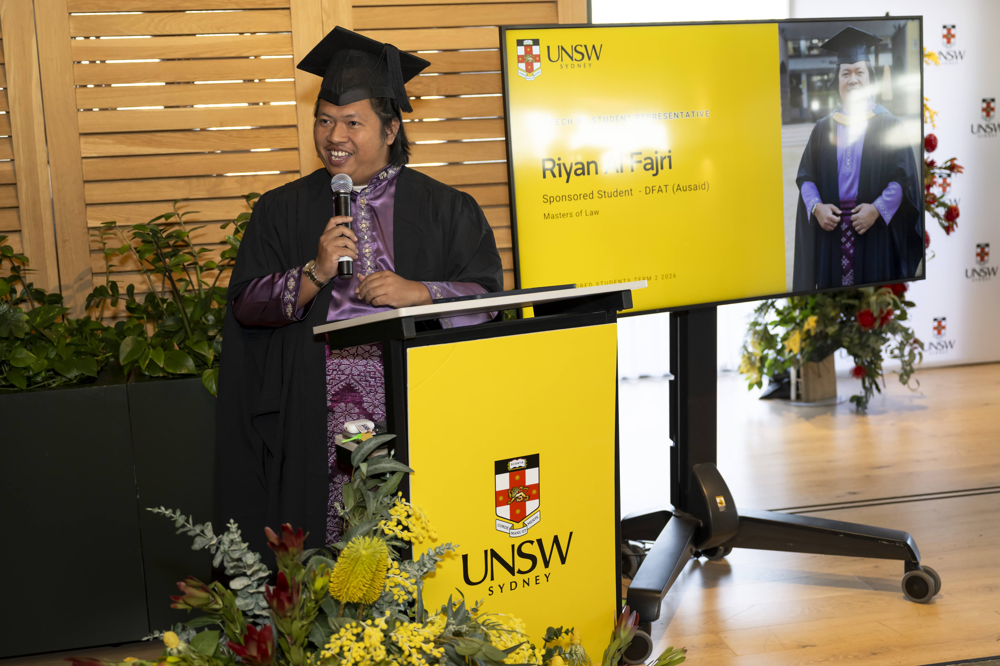
Celebrating Your UNSW JourneyMenyampaikan completion speech sebagai Global Sponsored Student Representative di UNSW. Foto: Cassandra Hannagan.
CELEBRATING YOUR UNSW JOURNEY
Aku berdiri di podium. Ceritanya milik banyak orang.
Di akhir studi, aku dipercaya menyampaikan completion speech sebagai perwakilan Global Sponsored Students di UNSW. Bagian perjalanan ini ingin kubagi denganmu.
COMPLETION ALBUMToga, tawa, dan orang-orangnya.Buka 9 foto lainnya ↗
AKHIRNYA, BOLEH MERAYAKAN
Satu sesi foto. Banyak hal yang sudah dilewati.
Foto completion mendapat ruang sendiri di sini. Klik foto untuk melihatnya utuh dan lebih besar, tanpa harus mencari di galeri bulanan.
Akhirnya, boleh merayakanToga, senyum, dan kampus yang sudah menjadi bagian keseharian. Senang bisa sampai pada kesempatan merayakan perjalanan ini.
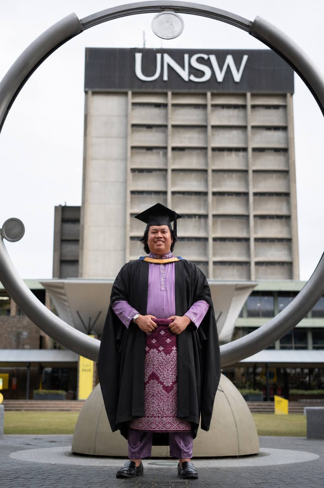
Satu foto untuk perjalanan yang sudah ditempuhDi UNSW, dengan toga dan perasaan bahwa satu bab besar sedang sampai di ujungnya.
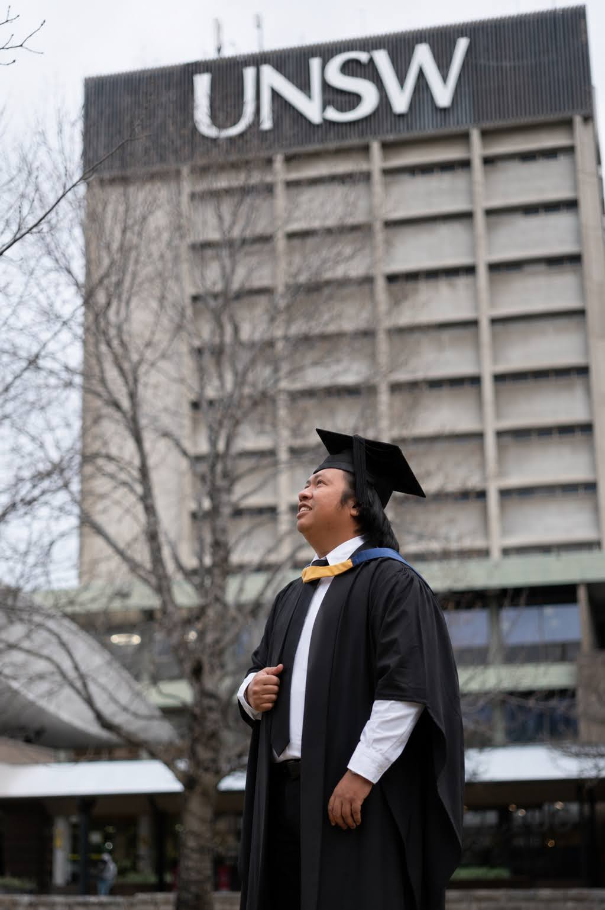
Kampus yang kini punya begitu banyak ceritaBerpose lagi di UNSW. Nama kampus ini kini terhubung dengan kelas, teman, dan hari-hari yang benar-benar kujalani.
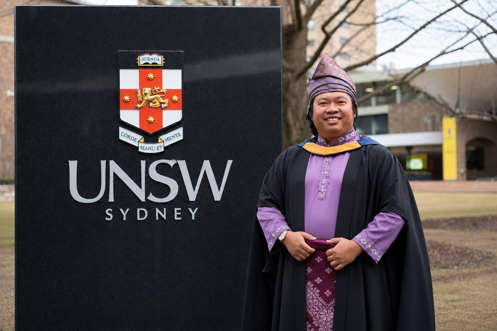
UNSW Sydney, dan satu pencapaian bersamaMerayakan completion. Di belakang satu orang yang mengenakan toga, ada dukungan keluarga, teman, pengajar, dan para pemberi kesempatan.
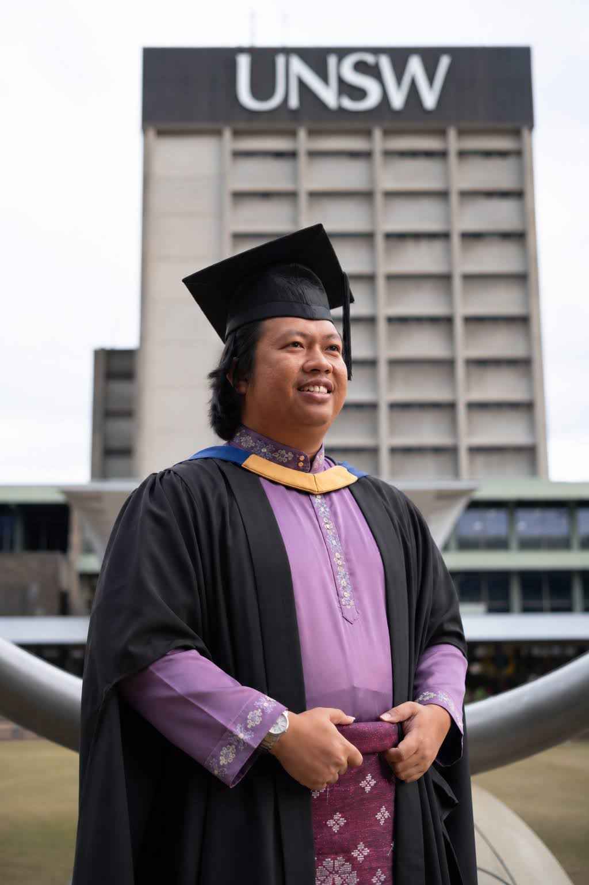
Melihat kembali sebelum berangkat lagiSatu pose lagi di kampus. Ada rasa bahagia karena sampai di titik ini, dan kesadaran bahwa waktunya akan segera berubah.Hari untuk tersenyum lebih lebarMerayakan selesainya satu perjalanan belajar. Terima kasih untuk orang-orang yang ikut membuatnya mungkin.
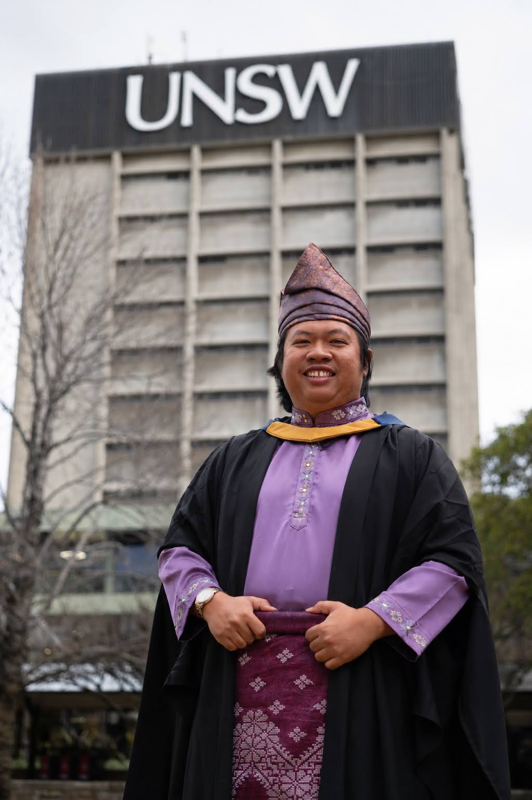
Merayakan sebelum membuka bab berikutnyaMasih menikmati kesempatan berfoto dengan toga. Sesudah ini, banyak hal yang dipelajari perlu dibawa kembali ke kehidupan di rumah.
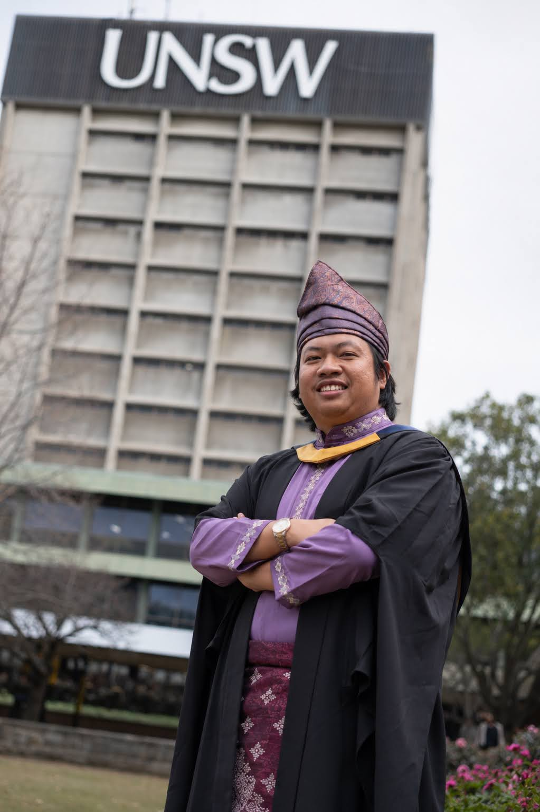
Selesai satu bab, membawa banyak bekalSatu foto lagi dari rangkaian completion. Gelarnya penting; orang-orang dan pengalaman sepanjang perjalanan ini juga ingin kubawa pulang.
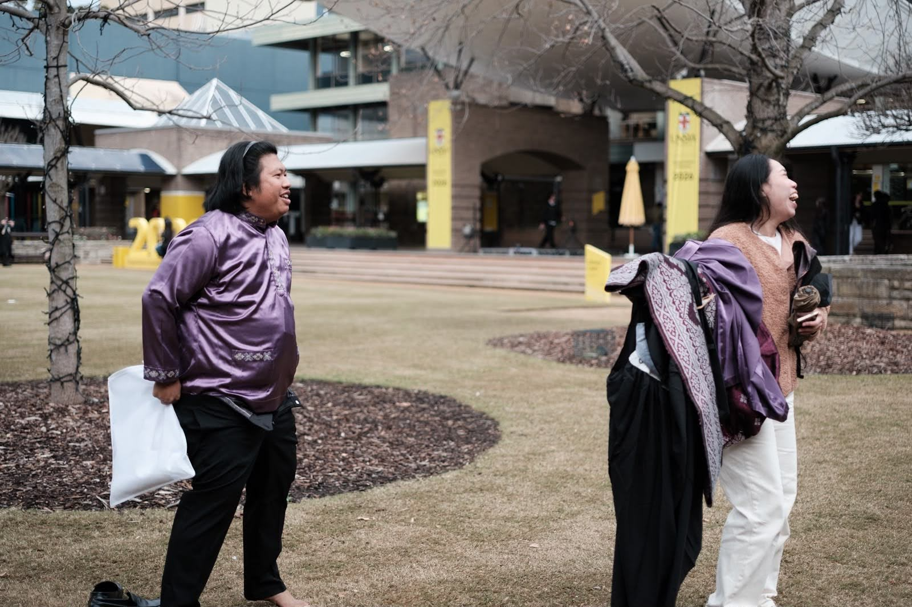
Di balik foto rapi, ada HanisahHanisah dari Singapura membantu merapikan dan mengganti perlengkapan saat sesi foto. Terima kasih, my favourite girl—di balik hasil yang rapi, ada teman yang ikut repot dengan hangat.
DI BALIK FOTO YANG RAPI
Terima kasih, Hanisah.
Ada teman yang ikut membantu mengganti dan merapikan perlengkapan selama sesi foto. Hal kecil seperti ini membuat sebuah perayaan terasa hangat: kita tidak menjalaninya sendirian.
Lima bagian tentang apa yang sebenarnya ikut dirayakan hari itu. Pilih satu untuk membaca; tombol bertanda ▶ membuka video pada waktunya.
Yang dipelajari di Sydney tidak berhenti menjadi milik orang yang mendapat beasiswa.
BAGIAN 01 · VERSI BACA
Pengetahuan yang menjadi milik bersama
Aku ingin memulai dengan sebuah cerita. Pada 1967, diplomat Malta Arvid Pardo berbicara di Majelis Umum Perserikatan Bangsa-Bangsa tentang dasar laut di luar batas yurisdiksi nasional. Gagasan itu membawaku memikirkan inti perjalanan beasiswa ini: pengetahuan, pengalaman, dan kehidupan kampus yang telah kita bagi menjadi semacam warisan bersama.
Ini bukan hanya milik orang Vietnam, Indonesia, atau Australia. Pengalaman itu milik kita bersama. Dan apa yang kita bawa darinya akan ikut kembali ke negara-negara asal kita. Belajar di sini berarti memperoleh sesuatu yang nilainya bisa melampaui diri sendiri.
Di belakang satu orang yang berangkat, ada keluarga yang belajar menjalani jarak.
BAGIAN 02 · VERSI BACA
Keluarga juga sampai di garis akhir
Perjalanan ini tidak mudah sejak awal. Bagi yang sudah bekerja, ada dokumen dan tanggung jawab yang harus diserahterimakan. Tetapi bagian tersulit justru memberi tahu orang yang kita sayangi bahwa kita akan pergi.
Istriku memahami keputusan ini. Putriku yang berusia delapan tahun menghadapinya dengan pertanyaan yang jauh lebih sederhana: jadi selama setahun ia tidak bisa bermain denganku? Pertanyaan itu menghantam hatiku. Di titik itu, jarak bukan lagi sebuah rencana studi. Ia berarti waktu bersama yang akan kami lewatkan.
Itulah sebabnya keberhasilan ini tidak hanya milik kita. Ia juga milik pasangan yang menjaga kehidupan di rumah, anak-anak yang menunggu, dan orang tua yang mendukung. Kembali ke universitas pun menuntut penyesuaian pribadi dan akademik yang besar. Namun kita telah sampai. Orang-orang yang membuat perjalanan ini mungkin juga pantas menerima tepuk tangan.
Negara yang dahulu hanya kukenal di peta akhirnya hadir sebagai teman satu meja.
BAGIAN 03 · VERSI BACA
Dari satu meja, menjadi komunitas lintas negara
Pada awal Introductory Academic Program, kami duduk bersama teman senegara. Lama-kelamaan, meja itu terbuka. Ada teman Nepal, Vietnam, Singapura, Myanmar, Kepulauan Solomon, Tonga, Kaledonia Baru, Pakistan, Filipina, dan Mongolia. Tempat-tempat yang dahulu kukenal dari peta dan buku sejarah kini hadir sebagai orang yang bisa kuajak berbicara.
Komunitas membuat masa studi ini berharga. Sebagai salah satu Executive Committee UNSW Australia Awards Scholars Society, aku sampai merasa di hampir setiap sudut kampus ada senyum dan sapaan yang kukenal.
Kita belajar keras, tetapi kita juga bersenang-senang: barbecue dan coastal walk, Gerringong, Kiama, Wollongong, Central Coast, Newcastle. Sebagian teman menjelajah lebih jauh lagi. Jika merasa belum menemukan keseruannya, mungkin kita belum menemukan teman seperjalanan yang cocok.
Kebersamaan lintas negara, latar belakang, agama, dan keyakinan ini memperlihatkan bahwa manusia tetap bisa berbagi dunia untuk kepentingan bersama. Kedekatan itu juga mengajak kita peduli pada penderitaan di negara lain. Dalam pidato ini aku menyampaikan belasungkawa kepada korban bencana dan keluarga yang terdampak di Indonesia dan Nepal.
Ada yang ingin kubawa dari Sydney ke Jakarta: kesempatan untuk hidup dengan lingkungan yang lebih baik.
BAGIAN 04 · VERSI BACA
Udara, laut, dan tanggung jawab untuk pulang
Ketika pertama tiba di Sydney, ada sesuatu yang ingin kubotolkan dan kubawa pulang ke Jakarta: udara bersih, pesisir hijau, dan laut yang bersih. Dalam tugas akademik IAP, aku menaruh perhatian pada kerangka kebijakan lingkungan Australia. Setelah merasakan sendiri kemungkinan itu, aku pulang dengan semangat untuk ikut membangunnya di rumah.
Sebagai pembelajar hukum, aku menghubungkan pengalaman itu dengan kesejahteraan masyarakat. Melindungi udara, laut, dan manusia menjadi tanggung jawab yang ingin kubawa. Itulah pengembalian sesungguhnya dari investasi pendidikan ini: tidak berhenti pada gelar, melainkan kewajiban membangun setelah pulang.
Semua ini juga bukan perjalanan seorang diri. Aku berterima kasih kepada para sponsor yang mendukung kami. Secara pribadi, terima kasih kepada Department of Foreign Affairs and Trade Australia serta LPDP Indonesia. Kesempatan ini terasa lebih besar daripada beasiswa untuk kuliah; ia menjadi pengalaman yang mengubah hidup.
Perpisahan tidak harus menjadi akhir dari saling membantu.
BAGIAN 05 · VERSI BACA
Datang sebagai orang asing, pulang sebagai keluarga
Kepada teman-teman scholars dan keluarga yang mendukung: kita datang dari sudut dunia yang berbeda sebagai orang asing. Kita pulang sebagai keluarga.
Kita memiliki hubungan dan jaringan UNSW. Gunakan itu. Ketika membutuhkan bantuan, mencari kolaborasi, atau memerlukan uluran tangan, hubungkan kembali titik-titik yang telah kita bangun di sini.
Kita datang dari banyak profesi dan latar belakang. Perbedaan itu bisa memberi kesempatan yang lebih baik bagi dunia. Terima kasih, dan selamat untuk kita semua.
File unduhan atau pratinjau dapat menolak pemutar YouTube. Jika itu terjadi, gunakan tautan YouTube di atas.
Pidato ini bergerak dari gagasan pengetahuan sebagai warisan bersama menuju pengalaman yang sangat pribadi: meninggalkan keluarga untuk studi, menemukan komunitas baru, lalu memikirkan apa yang harus dibawa pulang.
Pesisir hijau, udara bersih, dan laut yang sering kudatangi tidak berhenti menjadi pemandangan. Pengalaman itu ikut menyalakan keinginan untuk memakai bekal hukum demi lingkungan dan masyarakat di Indonesia.
Dengarkan pidatonya, atau ikuti versi baca di bawah. Keduanya membawa cerita yang sama.
CERITA DI BALIK PERJALANANDari tepian sungai, sampai ke Sydney.Tentang asal-usulku, keluarga, dan pesan ayah.+
Aku lahir di Kampung Deling, di tepian Sungai Kampar, Bangkinang. Masa kecil membawaku ke tepian Sungai Siak di Sungai Apit, lalu ke kota kecil Duri, Bengkalis. Masa SMA kujalani di Pekanbaru. Jauh sebelum mengenal pesisir Sydney, hidupku sudah bertumbuh bersama sungai, perpindahan, dan tempat-tempat yang mengajarkanku melangkah.
Kampung DelingSungai ApitDuriPekanbaruJakartaSydney
Jakarta menjadi tempatku terus tumbuh melalui STAN, Universitas Bakrie, dan Universitas Terbuka. Dari sana, perjalanan belajar ini membawaku menempuh Master of Laws di The University of New South Wales. Nama kampus yang dahulu menjadi tujuan akhirnya hadir sebagai kelas, bacaan, teman, dan hari-hari yang sungguh kujalani.
UNSW Law & Justice menempati peringkat 12 dunia dan pertama di Australia dalam QS World University Rankings by Subject 2025: Law & Legal Studies. Bagiku, kesempatan belajar di sana membawa tanggung jawab untuk menjalaninya sebaik mungkin.
Kesempatan itu kujalani jauh dari keluarga. Istriku mendukung langkah ini, sementara Alisha, putri kecilku, menunggu di rumah. Pertanyaannya tentang setahun tanpa bermain bersama ayah membuat jarak terasa sangat nyata. Ada waktu bersama yang kami lewatkan agar perjalanan belajar ini bisa dijalani. Karena itu, ketika kelak sampai di garis akhir, ada bagian pencapaian ini yang sejak awal sudah menjadi milik mereka.
Ayah telah wafat pada 2022. Namun pesannya tetap ikut kubawa ke mana pun langkah ini berlanjut:
Pergilah layari dunia ini, buat namamu di mana-mana negeri. Agar ketika kamu besar kelak, kamu kembali dan membangun negeri. Biarlah nasib badanmu baik dan orang-orang mendapat manfaat darinya kelak.
Makin jauh aku pergi, makin jelas arah pulang yang ingin kutuju: membawa ilmu yang bisa bekerja untuk orang lain. Di podium UNSW, perjalanan dari tepian sungai itu ikut hadir—bersama pesan ayah, dukungan istri, dan Alisha yang menunggu.
Mulai dari foto yang menarikmu. Setiap bulan punya cerita, orang, dan tempatnya sendiri.
ADA TEMPAT YANG INGIN KAMU SUSURI JUGA?
Pilih jalurnya. Aku akan mengantarmu ke cerita dan petanya.
Cara menikmati cerita ini
Mulai dari pidato atau langsung pilih bulan. Setiap bab punya menu cerita. Foto dan peta dapat diperbesar. Tombol ID / EN mengganti bahasa narasi, judul, dan penjelasan lengkap setiap foto.
Agustus 2025
Awal yang serba baru
Tentang bulan ini +
Agustus membawaku tiba di Sydney, mengenal UNSW, lalu mulai bertemu orang-orang yang akan sering muncul dalam album ini. Semuanya masih baru, termasuk laut yang ternyata dekat sekali dari kehidupan kampus.
1 / 7
GESER CERITA KE SAMPING ATAU PAKAI TOMBOL PANAH →
Agustus 2025
Sydney, akhirnya bukan cuma nama di tiket.
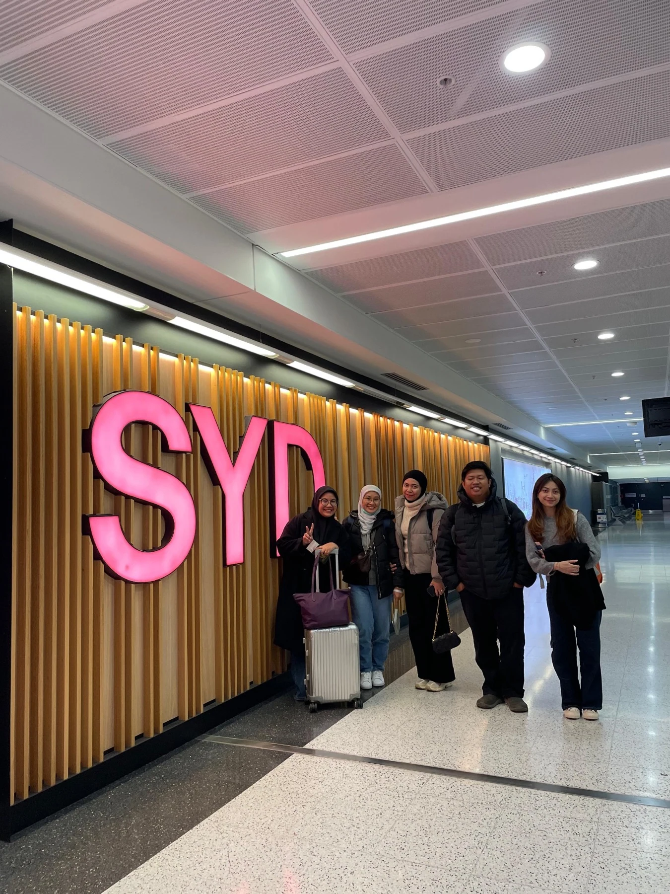
Mendarat. Perjalanan dimulai.Akhirnya mendarat di Sydney bersama teman-teman. Dari titik ini, studi di UNSW mulai benar-benar dijalani.
Cerita di balik foto+
Sampai juga. Di depan tanda SYD, rencana yang selama ini kupersiapkan akhirnya punya wujud. Aku datang untuk belajar di UNSW; orang-orang, tempat, dan cerita yang akan mengisi hidupku di sini masih menunggu untuk kukenal.
Lokasi dan petanya ↗
Agustus 2025
Habis kampus, ternyata bisa langsung mencari laut.
Geser foto untuk melihat rangkaian →
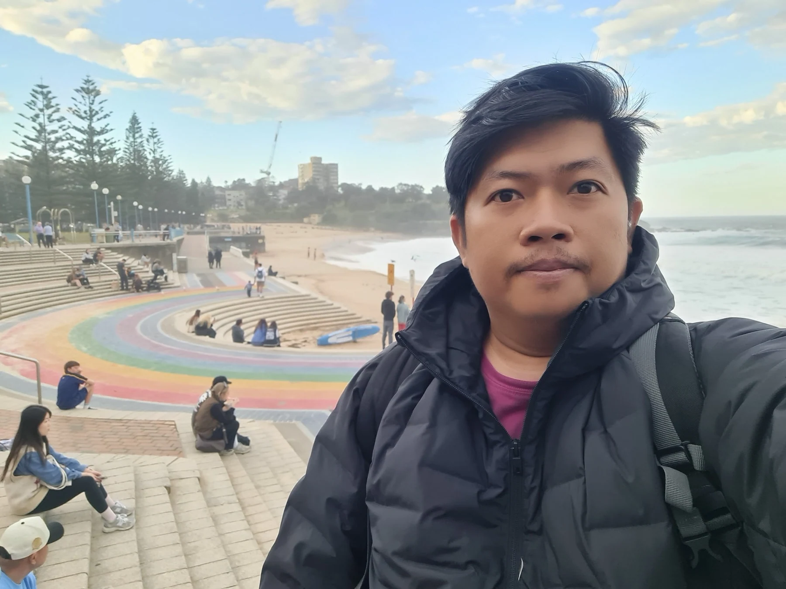
Coogee, dekat dari kampusCoogee dekat sekali dari kampus menurut catatanku, sekitar 1,5 km. Menemukan laut sedekat ini rasanya seperti mendapat bonus besar saat baru mulai kuliah.
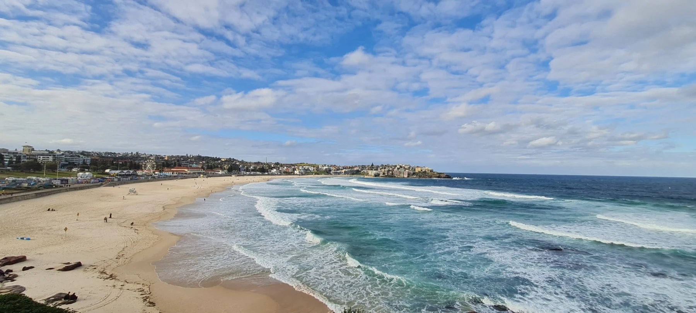
Bondi, sejauh mata memandangBondi terbuka lebar di depan mata. Pasir, laut, dan garis kota sama-sama minta diperhatikan.
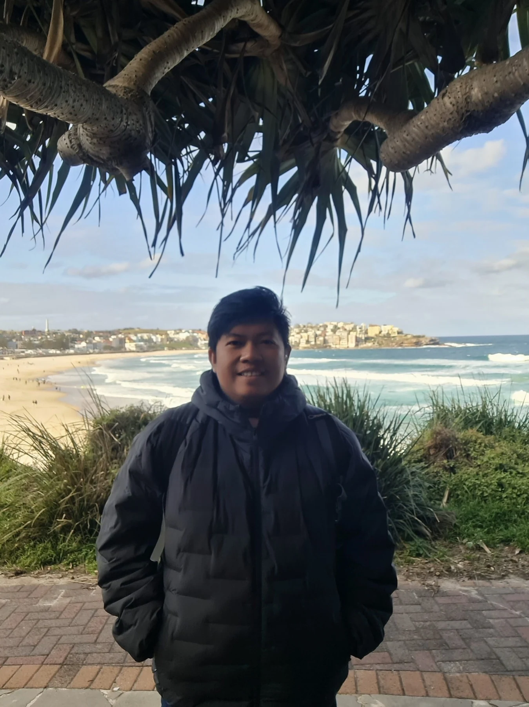
Pertama mengenal BondiPertama mengenal Bondi. Baru beberapa tempat didatangi, keinginan menjelajah pantai sudah makin panjang.
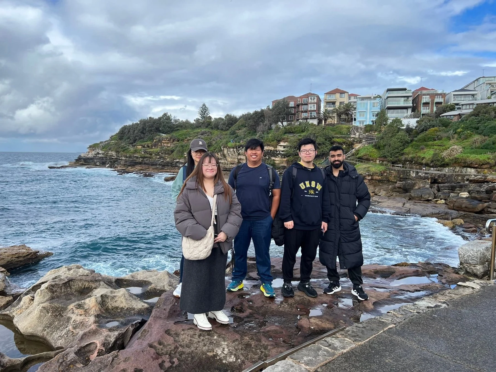
Coogee–Bondi, untuk pertama kaliCoogee–Bondi untuk pertama kalinya, berjalan bersama teman. Ternyata mengenal kota bisa seasyik ini.
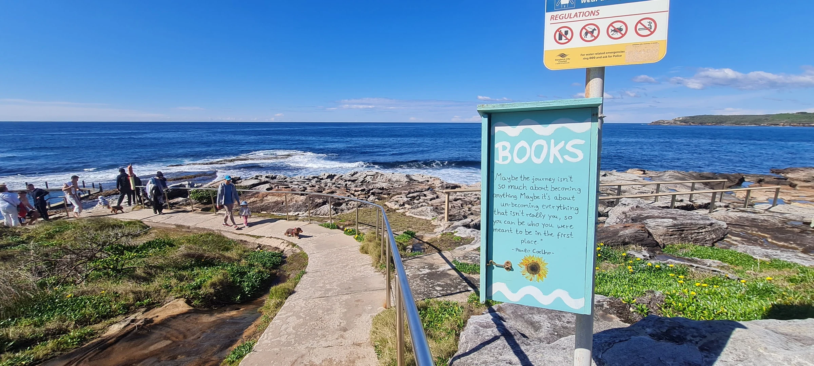
Maroubra menambah petaMaroubra menyusul setelah Coogee dan Bondi, pada kunjungan terpisah. Rasanya mulai punya banyak alasan untuk keluar kampus.
Cerita di balik foto+
Baru mengenal kampus, sudah menemukan Coogee. Lalu Bondi, Maroubra, dan coastal walk pertama dari Coogee ke Bondi bersama teman-teman. Daftar tempat yang ingin kudatangi cepat sekali bertambah—rupanya kuliah di Sydney juga akan membuatku banyak berjalan.
Peta tempat lain dalam cerita
Agustus 2025
Dari nama sebuah kampus, menjadi keseharian.
Geser foto untuk melihat rangkaian →
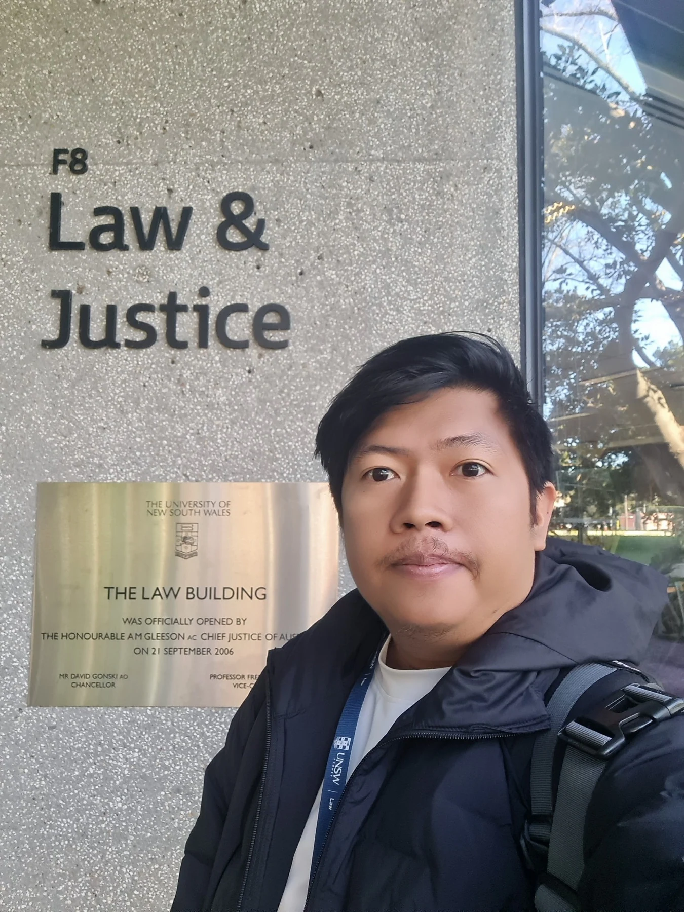
Di depan fakultas, di awal ceritaDi depan Faculty of Law & Justice, UNSW. Sekarang gedung ini akan menjadi bagian dari hari-hariku.
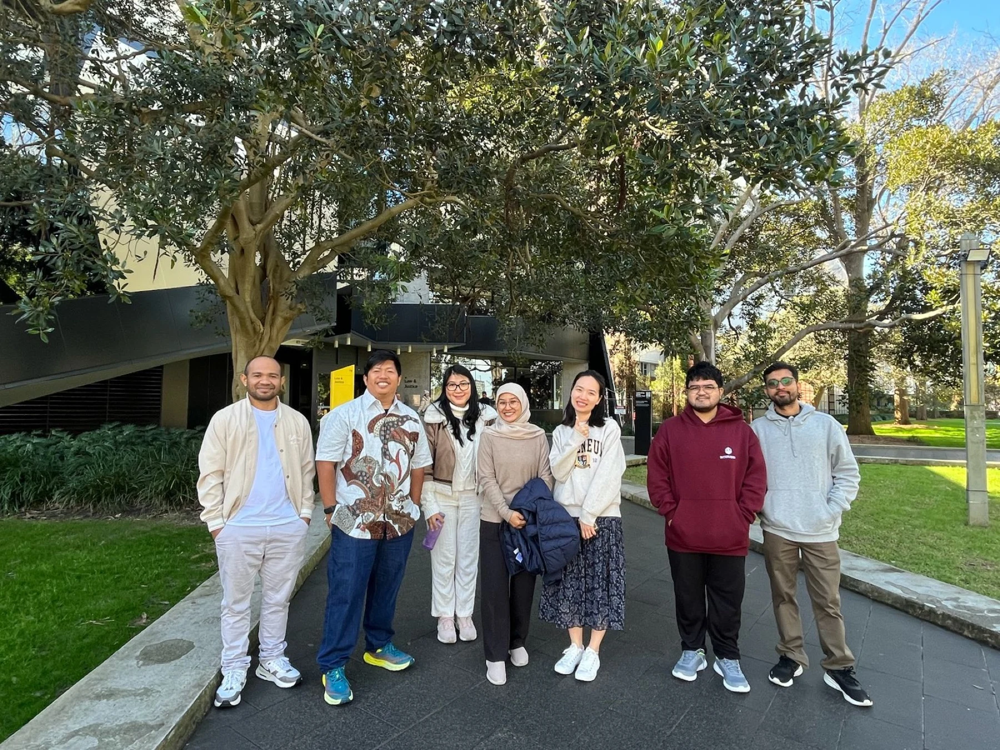
Orang-orang di awal perjalananBerkenalan dengan UNSW AAS Global Scholars. Orang-orang yang awalnya baru kutemui ini kelak muncul lagi di begitu banyak foto.
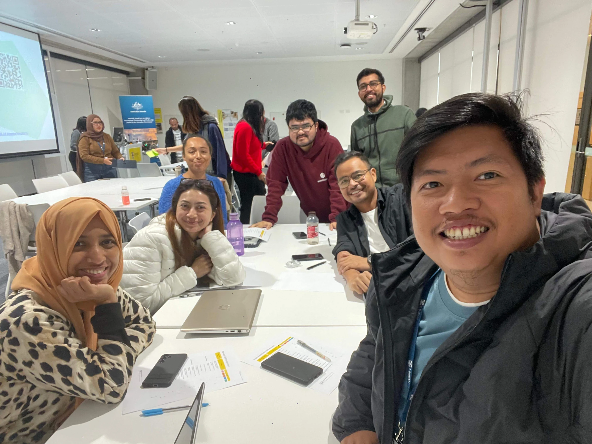
Sebelum kelas dimulaiIntroductory Academic Preparation bersama AAS Global Scholars. Belajar mempersiapkan kuliah, sambil mulai mengenal satu sama lain.
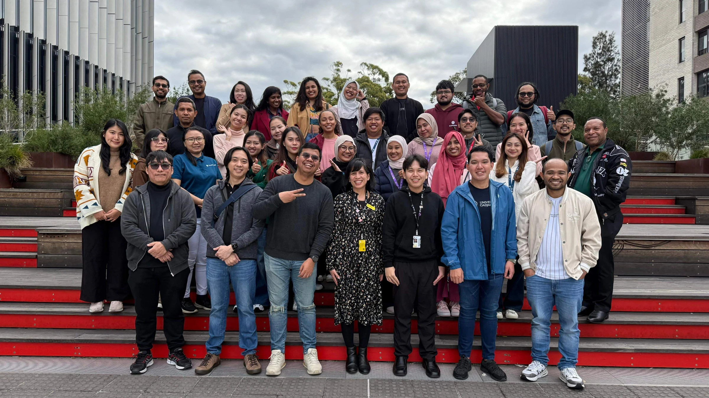
Dua angkatan, cerita yang bertemuCurrent dan new cohort AAS Global Scholars berkumpul. Menyenangkan bisa bertemu mereka yang sudah lebih dulu menjalani hidup di sini.
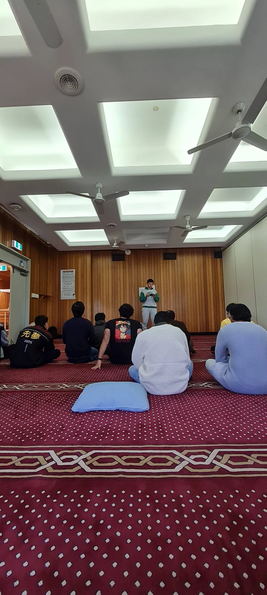
Tiga giliran Jumat di satu kampusUNSW punya musala! Jumatan pun ada tiga giliran: Squarehouse, gym, dan musala Upper Campus.
Cerita di balik foto+
Berdiri di depan Law & Justice terasa berbeda ketika aku benar-benar menjadi mahasiswanya. IAP dan pertemuan dengan AAS Global Scholars mulai mempertemukanku dengan wajah-wajah baru. Aku juga menemukan musala dan tiga giliran Jumatan di kampus: Squarehouse, gym, lalu Upper Campus. Pelan-pelan, aku belajar menjalani hari di sini.
Lokasi dan petanya ↗
Agustus 2025
Agustus tetap terasa seperti Agustus.
Geser foto untuk melihat rangkaian →
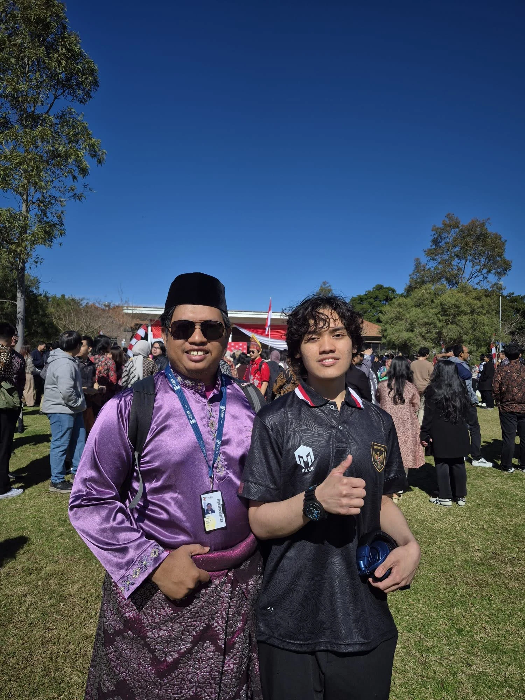
Merdeka, jauh dari IndonesiaMerayakan kemerdekaan Indonesia di Sydney dengan baju tradisional. Jauh dari rumah, tetap ingin ikut merasakan Agustus.
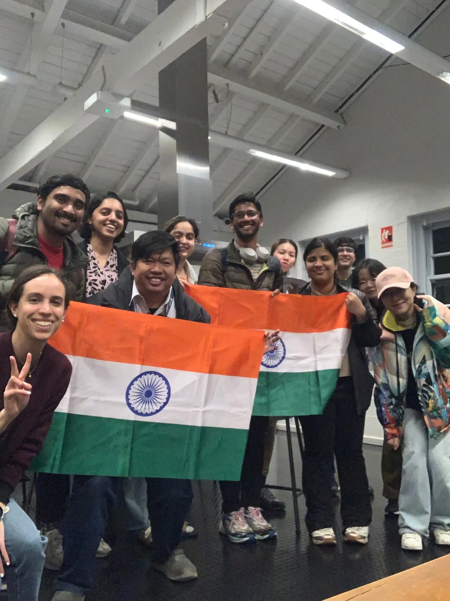
Satu perayaan, banyak temanHari Kemerdekaan India bersama penghuni The Village. Kali ini ikut mengenal arti perayaan bagi teman-teman dari negara lain.
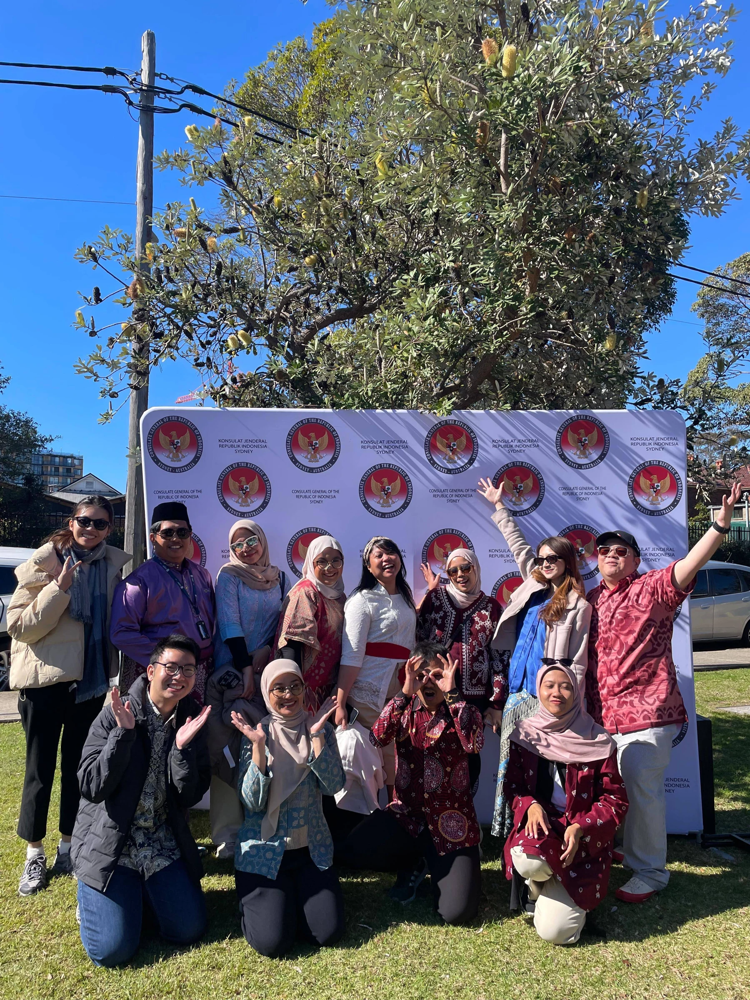
Indonesia yang ikut berkumpulBerkumpul sebagai sesama orang Indonesia, di negeri tempat kami sedang belajar. Senang menemukan suasana perayaan bersama.
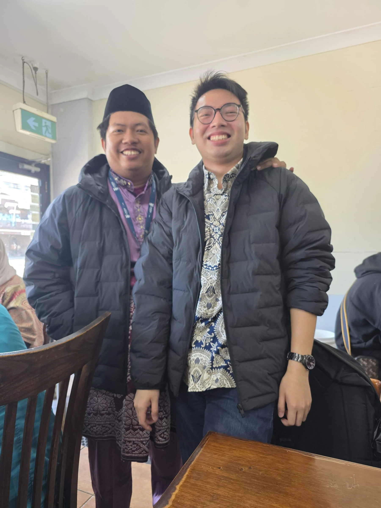
Kemerdekaan dan pertemuanMasih dalam perayaan kemerdekaan Indonesia. Kesempatan untuk bertemu dan merasa dekat, meski tanah air sedang jauh.
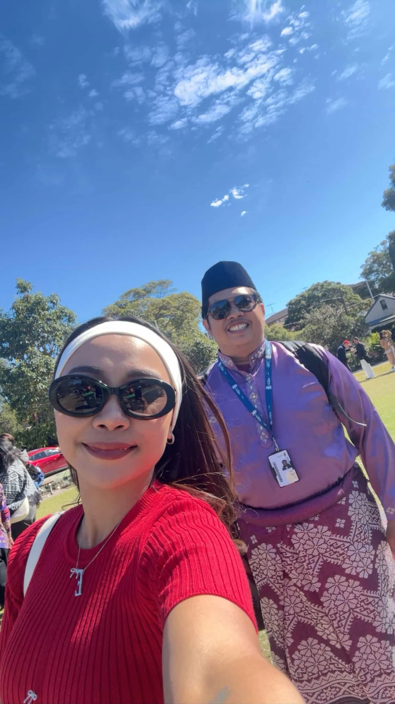
Masih dari hari kemerdekaanSatu lagi foto dari hari perayaan yang sama. Baju dan wajah-wajah di dalamnya membuat suasana hari itu mudah teringat.
Cerita di balik foto+
Jauh dari Indonesia, tetap ada alasan untuk memakai baju tradisional dan merayakan kemerdekaan bersama. Di The Village, aku juga ikut merayakan kemerdekaan India. Dua negara, dua perayaan, dan kesempatan saling mengenal melalui sesuatu yang dekat dengan rumah masing-masing.
Agustus 2025
Kota ini paling enak dikenal sambil berjalan.
Geser foto untuk melihat rangkaian →
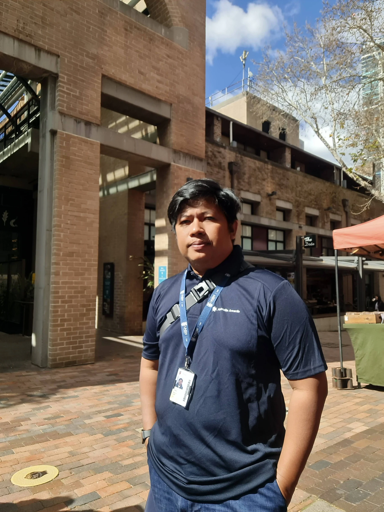
Berjalan di The RocksMenyusuri The Rocks dengan berjalan kaki. Kota terasa lebih dekat ketika ada waktu untuk melihat detailnya.
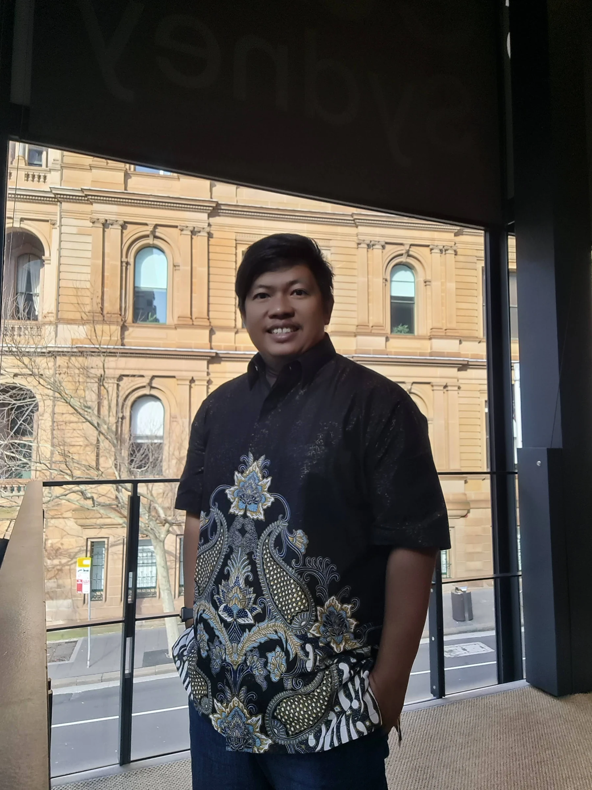
Keluar kelas, masuk museumMasuk ke museum di pusat kota. Rupanya mengenal Sydney juga bisa dimulai dengan mengikuti rasa penasaran di dalam bangunannya.
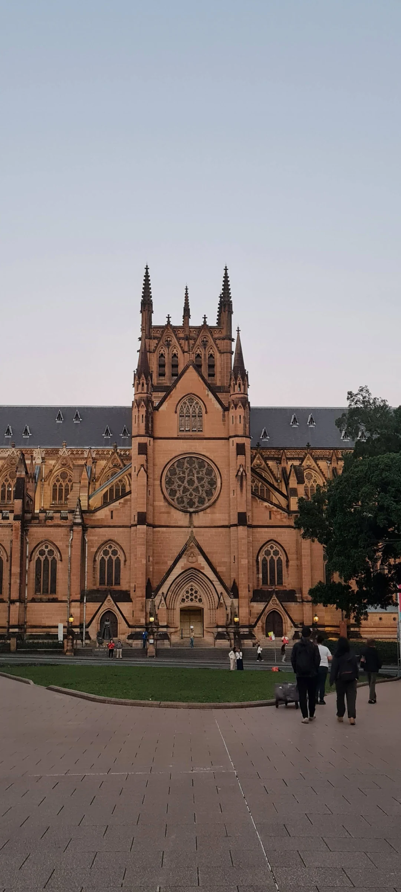
Katedral di ujung hariKatedral menjelang petang. Langit yang mulai redup membuatku ingin berhenti sebentar.
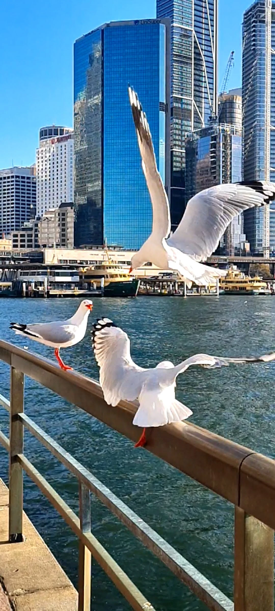
Yang kecil di tengah kota besarBurung-burung di Sydney Harbour ikut menarik perhatian. Di tengah kota besar, hal kecil juga bisa membuat kamera terangkat.
Cerita di balik foto+
Dari museum ke katedral, lalu The Rocks, aku mulai mengisi peta Sydney versiku sendiri. Bangunan-bangunan besarnya menarik perhatian; burung-burung di tepi pelabuhan pun kebagian tempat di kamera. Ternyata banyak yang bisa membuat berhenti, bahkan sebelum aku tahu nama semua jalannya.
Lokasi dan petanya ↗
Agustus 2025
Teman baru, satu meja, dan Sydney di luar jendela.
Geser foto untuk melihat rangkaian →
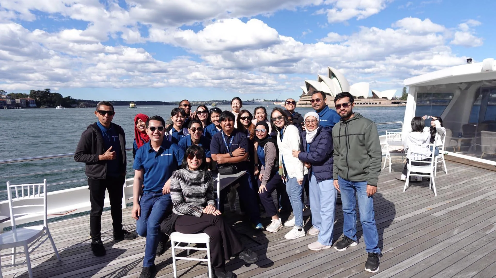
Kota dilihat dari airDi dek kapal bersama teman-teman, melihat Sydney Harbour dari atas air. Pemandangannya menyenangkan; bisa menikmatinya bersama membuatnya lebih seru.
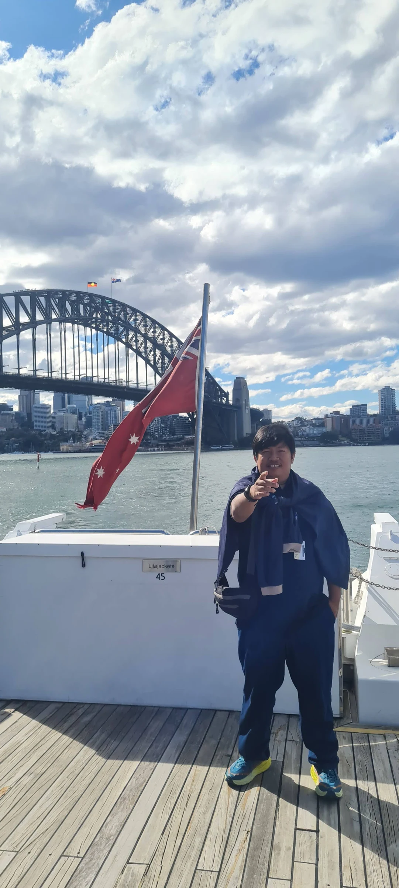
Makan siang di Sydney HarbourMakan siang di Sydney Harbour. Sesekali, latar lunch-nya boleh seperti ini.
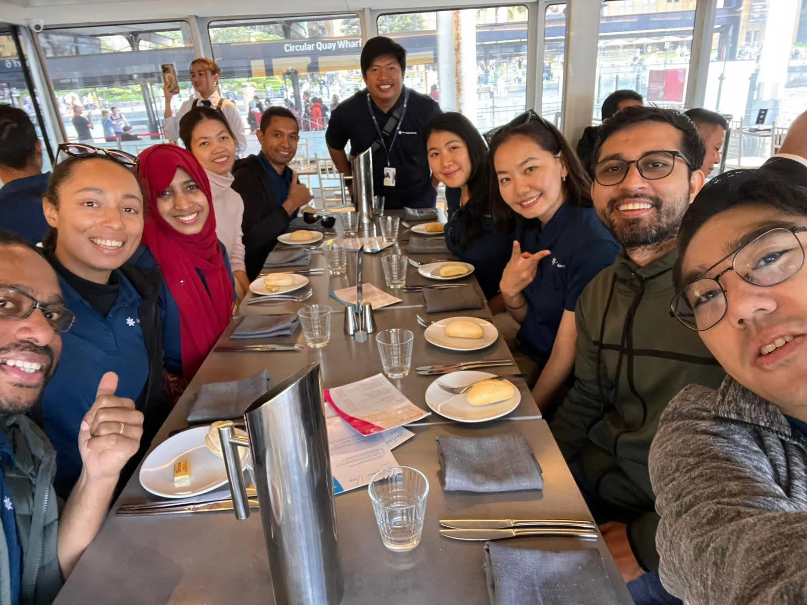
Semua duduk di satu mejaUNSW AAS T3 2025 duduk satu meja di kapal. Awal masa studi terasa lebih hangat dengan pertemuan semacam ini.
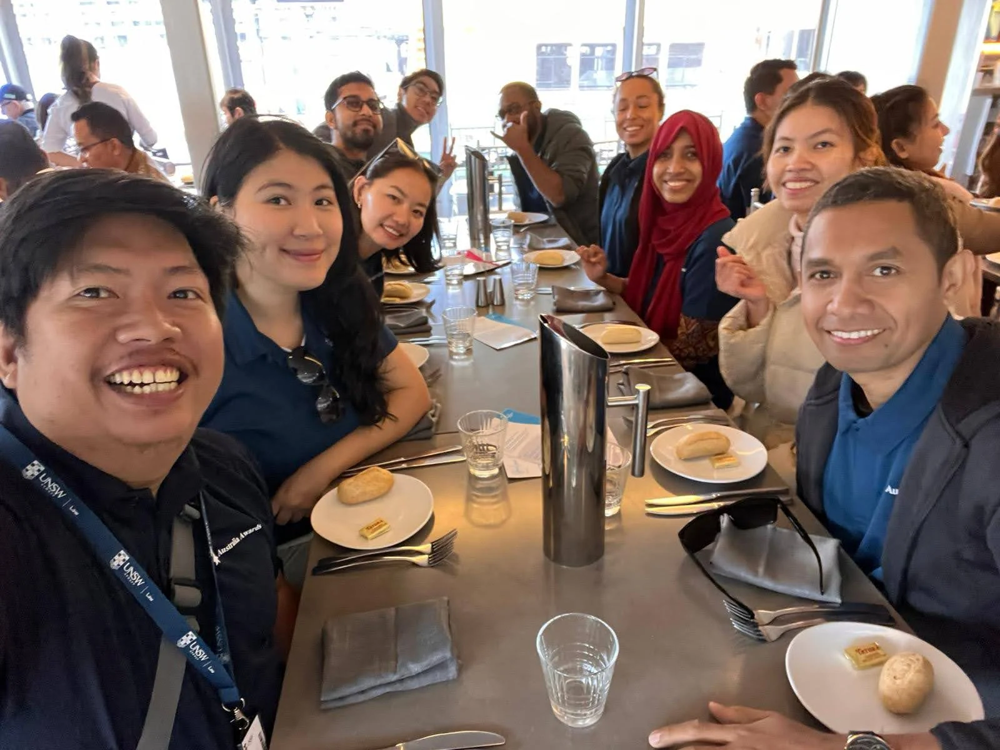
Percakapan dari sisi lain mejaMasih di meja lunch cruise, bersama teman-teman dari latar yang berbeda. Ada banyak orang baru untuk dikenal.
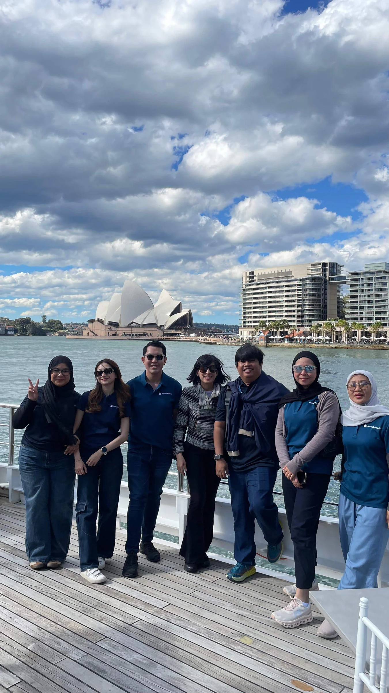
Opera House dari atas kapalOpera House di seberang air, teman-teman di dekatku. Salah satu cara menyenangkan menikmati kota yang baru didatangi.
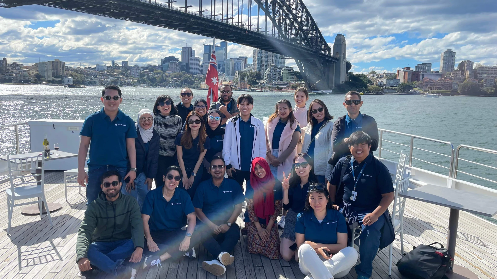
Berkumpul di bawah Harbour BridgeBerkumpul di bawah Harbour Bridge saat outing AAS. Senang punya kesempatan melihatnya sedekat ini.
Cerita di balik foto+
Lunch cruise bersama UNSW AAS T3 2025 membawa kami keluar dari suasana persiapan kuliah. Kami makan bersama, lalu naik ke dek dengan Opera House dan Harbour Bridge sebagai latar. Rasanya menyenangkan: kota yang sedang kukenal ini bisa dinikmati bersama orang-orang yang juga baru memulai.
Lokasi dan petanya ↗
Agustus 2025
Bagian merantau yang tidak masuk brosur kampus.
Geser foto untuk melihat rangkaian →
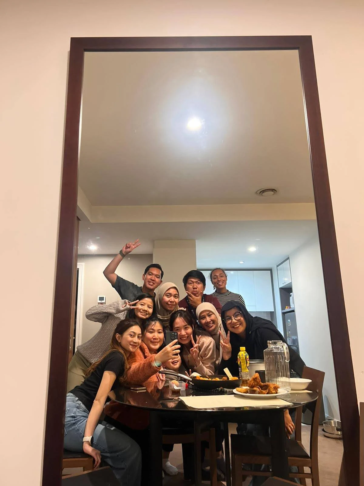
Berkumpul di Aye HouseMakan dan berkumpul di Aye House. Kehidupan di Sydney mulai punya pertemuan-pertemuan yang akrab.
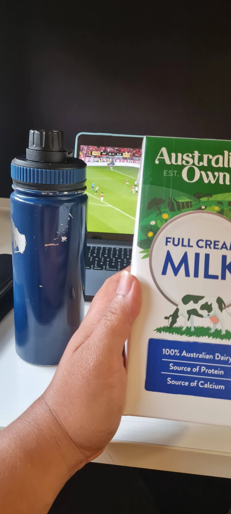
Ada juga yang gratis‘MBG di Australia’, begitu julukanku sendiri. Bahan makanan gratis, termasuk susu, dibagikan Senin, Rabu, dan Jumat—kabar menyenangkan untuk mahasiswa.
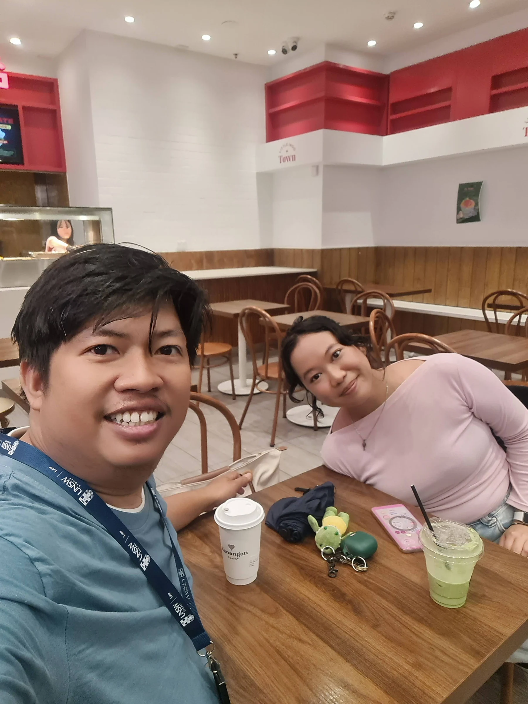
Belajar dari yang lebih dulu tibaBertemu senior LLM. Ada pengalaman dari orang yang lebih dulu menjalani kuliah di sini untuk didengarkan.
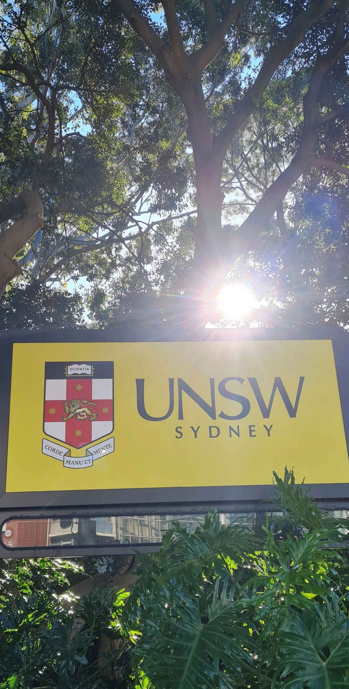
Nama kampus yang kini dekatPapan kuning UNSW yang kini kutemui dalam keseharian. Senang melihat nama yang dulu menjadi tujuan studi sudah sedekat ini.
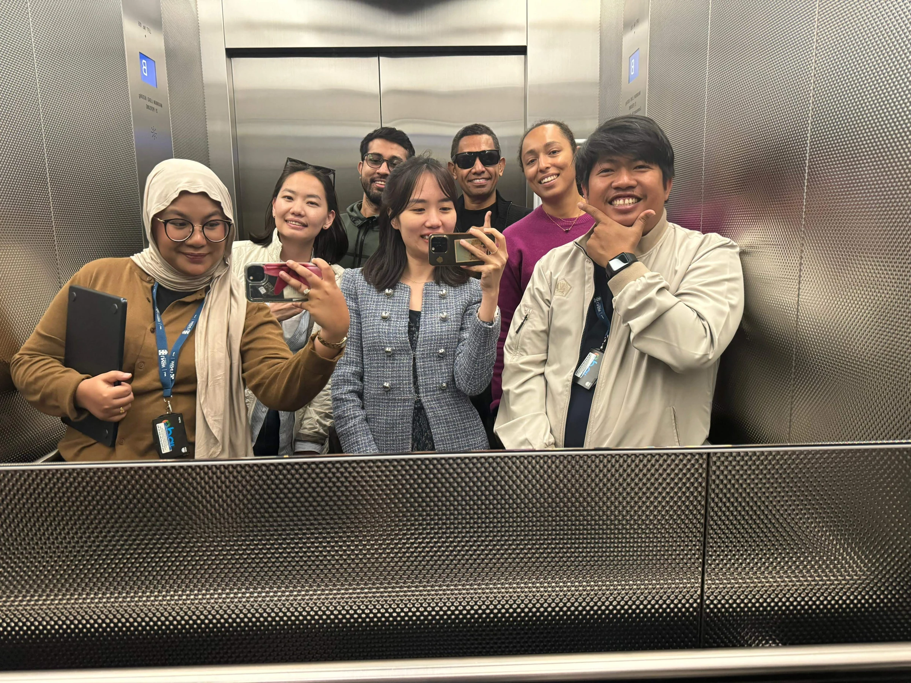
Bahkan di dalam liftFoto bersama, bahkan di dalam lift. Kalau sudah berkumpul, tempat sederhana juga cukup.
Cerita di balik foto+
Ada bahan makanan gratis yang kujuluki ‘MBG di Australia’, termasuk susu. Ada makan bersama di Aye House, senior LLM yang kutemui, dan foto ramai-ramai di lift. Hal-hal kecil semacam ini mulai mengisi hari—di antara kampus yang besar dan kehidupan baru yang masih kupelajari.
September 2025
Mulai menemukan tempat
Tentang bulan ini +
Kuliah mulai berjalan, pertemanan bertambah, dan aku mulai punya kegiatan di luar ruang kelas. Ada perkenalan yang terasa akrab, ada pengalaman yang sama sekali tidak kuduga.
1 / 9
GESER CERITA KE SAMPING ATAU PAKAI TOMBOL PANAH →
September 2025
Jauh-jauh ke Sydney, ketemu benang merah juga.
Geser foto untuk melihat rangkaian →
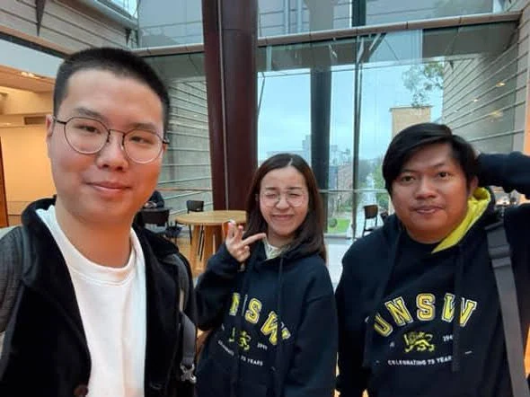
Awal kuliah, teman baruAwal kuliah di UNSW bersama teman-teman baru. Banyak nama dan pengalaman yang mulai saling bertemu.
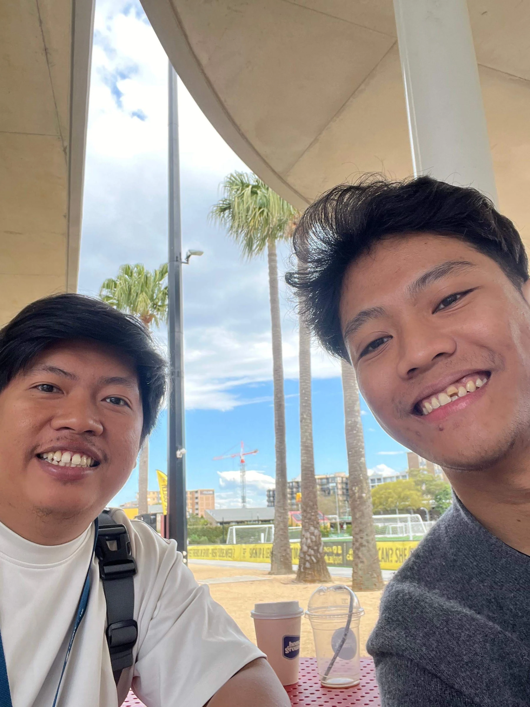
Ciputat boys #muhammadiyahmudaCiputat boys sampai juga di UNSW. Ada kedekatan yang terasa akrab di tengah lingkungan baru. #muhammadiyahmuda
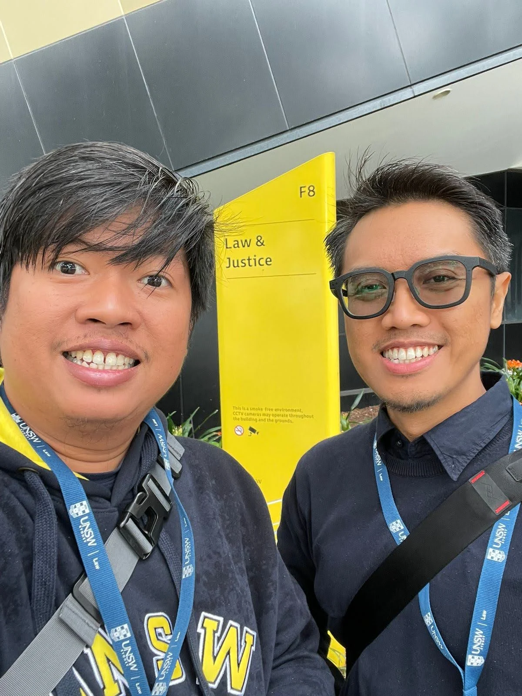
With Mas TitoBersama Mas Tito, senior Kemenkeu yang mengambil PhD in Law. Senang bisa bertemu senior di lingkungan fakultas yang sama.Teman baru, with NamwanBersama Namwan, teman baru di UNSW. Sedikit demi sedikit, kampus mulai punya wajah-wajah yang kukenal.Dari STAN ke UNSW #stannerUNSWDari STAN, bertemu lagi di UNSW. Dunia studi ternyata punya cara menyambungkan perjalanan kami. #stannerUNSW
Cerita di balik foto+
Ciputat boys, teman-teman STAN, Mas Tito dari Kemenkeu, lalu Namwan dan kawan-kawan baru di UNSW. Senang menemukan kedekatan yang sudah kukenal di tengah perkenalan yang serba baru. Ada yang jalannya pernah bersinggungan di Indonesia, ada yang baru bertemu di sini; sekarang kami sama-sama menjalani kuliah.
September 2025
Belajar di sini ternyata selebar itu.
Geser foto untuk melihat rangkaian →
Nomor satu di IAPNomor satu di Introductory Academic Preparation! Kabar manis yang membuat awal masa studi terasa makin bersemangat.Dari kampus, mendengar duniaMendengarkan Kamal Kishore, Head of UNDRR, secara langsung. Senang ketika kesempatan belajar bisa mempertemukan kita dengan pengalaman dunia yang luas.Belajar memperkenalkan diriBersama Tamara Stacey, belajar menggunakan LinkedIn. Ternyata memperkenalkan pengalaman sendiri ke dunia profesional juga perlu dipelajari.Politik dan ekonomi, dalam satu kelasInternational Political Economy bersama Dr Madison Cartwright. Politik dan ekonomi bertemu di ruang kelas.Kelas pertama: Law of the SeaKelas pertama Law of the Sea bersama Natalie Klein. Laut yang sering kudatangi kini juga kupelajari dari sisi hukum.Hari-hari yang diisi kelasSalah satu hari kuliah di UNSW. Di sinilah sebagian besar alasan keberangkatanku dijalani.Pelajaran yang tak kudugaSexEd yang membuatku kaget: pertama kali mendapat penjelasan penggunaan kondom yang benar. Sungguh pengalaman kelas yang tidak kuduga.Condom relay, sungguhanCondom Relay dalam sesi SexEd. Materinya sampai dipraktikkan melalui kegiatan—pengalaman baru buatku.
Cerita di balik foto+
Law of the Sea bersama Natalie Klein, IPE bersama Madison Cartwright, sesi Kamal Kishore, sampai LinkedIn bersama Tamara Stacey. Lalu datang SexEd dan Condom Relay—yang ini sungguh di luar bayanganku, sampai aku kaget sendiri. Di tengah semua pengalaman baru itu, mendapat nomor satu di IAP menjadi kabar manis untuk awal perjalanan.
September 2025
Sabai, Cronulla, dan satu hari jauh dari meja belajar.
With Sabai at CronullaKe Cronulla bersama Sabai. Satu hari yang menyenangkan untuk menjauh sebentar dari meja belajar dan menikmati pesisir selatan Sydney.
Cerita di balik foto+
Kali ini aku ke Cronulla bersama Sabai. Menyenangkan bisa meninggalkan suasana kampus sebentar, berjalan di pesisir, dan menikmati waktu bersama tanpa harus menjadikan kuliah sebagai pusat percakapan. Sydney bagian selatan mulai punya tempat dalam daftar kunjunganku.
Peta tempat lain dalam cerita
September 2025
Sama-sama Kemenkeu. Ternyata negaranya yang beda.
With Reyad · Kemenkeu, beda negaraAku mengaudit bea cukai, Reyad customs officer Bangladesh. Sama-sama Kementerian Keuangan, ternyata yang berbeda negaranya.Bersama Nazmun NaharBersama Nazmun Nahar, yang juga bekerja di bea cukai Bangladesh. Senang menemukan titik temu dunia kerja sejauh ini dari Indonesia.
Cerita di balik foto+
Aku mengaudit bea cukai; Reyad bekerja di bea cukai Bangladesh. Ketika bertemu di Sydney, ada kedekatan pekerjaan yang langsung terasa—sama-sama Kementerian Keuangan, beda negara. Nazmun Nahar juga datang dari bidang yang sama. Dunia terasa sedikit lebih kecil lewat pertemuan seperti ini.
September 2025
Setelah menjadi menteri, masih memilih menjadi mahasiswa.
With Salvador · Terus memilih belajarBersama Salvador, mantan Menteri Pekerjaan Umum Timor-Leste yang menempuh PhD. Beliau membuatku ingin terus menjaga kemauan belajar, sejauh apa pun pengalaman nanti bertambah.
Cerita di balik foto+
Bertemu Salvador, mantan Menteri Pekerjaan Umum Timor-Leste yang sedang menempuh PhD, membuatku berhenti sejenak memikirkan arti belajar. Pengalamannya sudah panjang, tetapi ia masih mau kembali menjadi mahasiswa. Ada semangat yang patut kubawa pulang dari pertemuan ini: jangan lekas merasa selesai.
September 2025
Kali ini, masuk ke balik pintunya.
Geser foto untuk melihat rangkaian →
Masuk ke dalam Government HouseMasuk ke Government House bersama teman-teman. Menyenangkan ketika tempat yang dikunjungi bisa dilihat juga dari dalam.Singgah di Government HouseDi depan Government House. Satu kesempatan keluar dari kampus untuk melihat bagian kota yang berbeda.Harbour Bridge, sudut yang lainHarbour Bridge dari sudut lain. Jembatan yang sama ternyata tetap bisa membuat ingin mengambil foto lagi.
Cerita di balik foto+
Government House bukan lagi bangunan yang hanya kulihat dari luar. Aku masuk bersama teman-teman, lalu kembali menemukan Harbour Bridge dari sudut lain. Kunjungan seperti ini membuat Sydney terasa makin bisa dijelajahi: satu pintu terbuka, lalu ada bagian kota lain yang ingin dilihat.
Lokasi dan petanya ↗
September 2025
Kalau lautnya begini, jalan lagi juga mau.
Geser foto untuk melihat rangkaian →
Coastal walk, sekali lagiCoastal walk bersama teman-teman, lalu merapat di atas bebatuan untuk satu foto. Laut di belakang membuat tempat berhenti ini sulit dilewatkan.Jeda di tepi ombakJeda di dekat ombak dalam outing bersama. Ada hari yang cukup dinikmati dengan terus berjalan, lalu berhenti ketika pemandangannya menarik.Bersama teman, menghadap lautBersama teman-teman menghadap laut. Senang punya waktu seperti ini di luar agenda akademik.Perjalanan yang dinikmati bersamaMasih dari outing pesisir yang sama. Kalau perjalanan dilakukan bersama, foto-fotonya juga terasa lebih ramai.Berjalan bersama ladsBerjalan bersama lads. Mengenal kota sambil punya waktu mengenal orang-orangnya.
Cerita di balik foto+
Coastal walk lagi bersama lads. Ada foto ramai-ramai di bebatuan, jeda di dekat ombak, dan perjalanan yang dinikmati bersama. Saat melihat album ini, yang paling ingin kuingat justru kebersamaannya—siapa yang ikut berjalan dan bagaimana kami mengisi hari di luar kelas.
September 2025
Mulai punya tempat untuk merasa dekat.
Geser foto untuk melihat rangkaian →
Bertemu komunitas IndonesiaBersama Muhammadiyah dan Aisyiyah New South Wales. Ada suasana Indonesia yang menyenangkan untuk ditemui di sini.Malam bersama temanArc club party bersama teman-teman. Malam ini, waktu untuk kumpul di luar kelas.Melbourne bertemu SydneyTeman-teman LPDP–AAS dari Melbourne bertemu di Sydney. Beda kota studi, tetap bisa duduk bersama.Satu kamar di SydneyKamar apartemenku: tempat tidur, meja belajar, dan barang sehari-hari. Dari ruang inilah banyak hari di Sydney dimulai dan diakhiri.Singgah di LakembaSinggah di Masjid Lakemba. Senang mulai mengenal ruang ibadah dan kehidupan Muslim di Sydney.
Cerita di balik foto+
Bertemu Muhammadiyah dan Aisyiyah NSW, teman-teman LPDP–AAS dari Melbourne, lalu singgah di Lakemba. Di sela pertemuan itu, ada kamar apartemen yang menjadi tempat kembali. Merantau pelan-pelan diisi dua hal sekaligus: lingkungan baru yang ingin kukenal dan kedekatan dengan Indonesia yang tetap kubutuhkan.
Lokasi dan petanya ↗
September 2025
Sekarang, giliranku ikut bersuara.
Geser foto untuk melihat rangkaian →
Giliran menyampaikan penutupMenyampaikan closing remarks di UNSW Diversity Festival 2025. Kesempatan untuk ikut bersuara dalam kehidupan kampus.Di balik acara, ada orang-orangnyaBersama peserta dan teman-teman Diversity Festival. Di balik kesempatan berbicara, ada pertemuan yang ikut membuatnya berarti.Satu kesempatan untuk bersuaraSatu lagi foto dari closing remarks. Pengalaman yang ingin kubawa sebagai pengingat untuk berani mengambil kesempatan.Membawa suara mahasiswa internasionalBertemu Professor Lisa Zamberlan sebagai pengurus AAS Society. Kami membawa hasil survei perhatian mahasiswa internasional—ada suara teman-teman yang perlu disampaikan.Resmi mengambil peran baruResmi sebagai Arc Representative UNSW Australia Awards Scholars Society. Sekarang ada tanggung jawab baru di tengah masa kuliah.
Cerita di balik foto+
Di UNSW Diversity Festival 2025, aku mendapat giliran menyampaikan closing remarks. Peran di AAS Society juga mulai berjalan: sebagai Arc Representative, aku ikut membawa hasil survei perhatian mahasiswa internasional kepada Professor Lisa Zamberlan. Ada rasa tanggung jawab yang ikut tumbuh ketika kesempatan berbicara mulai datang.
Oktober 2025
Dari ruang kelas ke tepi laut
Tentang bulan ini +
Oktober mengisi hari dengan kelas, tanggung jawab baru, dan perjalanan bersama teman. Aku mulai lebih sering kembali ke tempat yang kusukai—karena mengenal kota ternyata bisa berlangsung pelan-pelan.
1 / 9
GESER CERITA KE SAMPING ATAU PAKAI TOMBOL PANAH →
Oktober 2025
Sebuah pesan yang ingin kubawa sampai pulang.
Satu foto, sebuah pesanBersama Her Excellency the Honourable Margaret Beazley AC KC di Government House. Pesannya untuk belajar dan berkarya sebaik mungkin ingin kubawa lebih jauh dari kunjungan ini.The Village ke Government HouseTeman-teman The Village berkumpul di depan Government House. Senang bisa menjalani kunjungan ini bersama.
Cerita di balik foto+
Kami datang ke Government House sebagai mahasiswa internasional baru di UNSW dan bertemu Margaret Beazley. Dari pesannya, aku menangkap dorongan untuk memakai kesempatan di Sydney sebaik mungkin: belajar sungguh-sungguh dan menghasilkan karya terbaik. Ke mana pun kami pergi sesudah studi, kesempatan ini perlu berarti sesuatu.
Lokasi dan petanya ↗
Oktober 2025
Ternyata Indonesia ikut duduk di ruang kelas.
Geser foto untuk melihat rangkaian →
Saat Indonesia hadir di ruang kelasContoh Indonesia muncul di kelas hukum internasional. Materi terasa lebih dekat ketika yang dibahas adalah negeri sendiri.Kembali membahas iklimSeminar perubahan iklim, satu kesempatan lagi mendalami persoalan yang terus muncul dalam masa studi.Tetap menjadi peserta yang belajarMasih belajar tentang perubahan iklim. Topiknya besar, dan rasanya masih banyak yang perlu dipahami.Jauh dari Indonesia, tetap membicarakannyaBersama Indo-Scholars membahas isu sosial Indonesia. Jauh dari rumah tidak membuat perhatian ke sana berhenti.Perang di dalam pembahasan kelasUkraina–Rusia masuk dalam pembahasan kelas. Peristiwa yang diikuti dunia kini juga menjadi bahan belajar kami.Ekonomi politik dan pembangunanGlobal Political Economy Development. Mencoba melihat pembangunan melalui hubungan politik dan ekonomi dunia.
Cerita di balik foto+
Ketika contoh Indonesia muncul dalam hukum internasional, materi kelas terasa jauh lebih dekat. Dari seminar iklim dan Ukraina–Rusia sampai Global Political Economy Development dan diskusi Indo-Scholars, banyak hal mengajakku melihat ulang rumah sendiri. Aku sedang belajar di luar negeri, tetapi perhatian pada Indonesia terus ikut masuk ke pembicaraan.
Oktober 2025
Wollongong lagi. Iya, mau lagi.
Wollongong, sekali lagiKe pantai Wollongong lagi untuk menyegarkan pikiran. Ada kalanya alasan pergi memang sesederhana ingin melihat laut.Berhenti di Wollongong HarbourSinggah di sekitar Wollongong Harbour, dalam kunjungan yang kusebut Cove Beach. Pesisir di selatan Sydney masih punya banyak sudut untuk dilihat.
Cerita di balik foto+
Ada saatnya meja belajar perlu ditinggalkan sebentar. Kali ini aku kembali ke Wollongong, mencari pantai dan singgah di sekitar pelabuhannya. Tempat yang pernah didatangi ternyata tetap bisa menjadi tujuan yang menyenangkan—apalagi ketika yang dicari memang sedikit ruang untuk menyegarkan pikiran.
Lokasi dan petanya ↗
Oktober 2025
Dulu ikut datang. Sekarang ikut menyiapkan.
Geser foto untuk melihat rangkaian →
Giliran menyiapkan pertemuanIkut menyiapkan fun meeting AAS Global Scholars sebagai Executive Committee. Sekarang ada pekerjaan di balik kesempatan teman-teman berkumpul.Pertemuan yang ikut kami siapkanGathering UNSW AAS Society yang ikut kami atur. Senang ketika kegiatan yang disiapkan akhirnya bisa dinikmati bersama.Setelah acara, sebelum berpencarAcara selesai, foto bersama dulu sebelum berpencar. Setelah bekerja bersama, bagian ini juga layak dinikmati.
Cerita di balik foto+
Fun meeting AAS Global Scholars kali ini punya arti berbeda: aku ikut mengaturnya sebagai bagian dari Executive Committee. Ada kepuasan tersendiri ketika teman-teman akhirnya bisa berkumpul dalam acara yang disiapkan bersama. Setelah selesai pun, kami masih merapat untuk satu foto lagi.
Oktober 2025
Keluar sebentar bersama Aye.
Geser foto untuk melihat rangkaian →
Bersama AyeBersama Aye dari Myanmar, salah satu teman terdekatku di Sydney. Senang punya waktu keluar bersama di tengah kesibukan kuliah.Keluar sebentar, kembali ke lautKeluar ke dekat laut bersama teman. Ada jeda yang memang lebih enak diisi dengan berjalan.Lebih santai di tepi airBerfoto sambil bermain-main di dekat air. Sesekali, hari cukup dijalani dengan lebih santai.Masih menikmati hari di luarMasih menikmati outing di tepi laut. Pertemanan terasa makin dekat melalui waktu yang bisa dibagi seperti ini.
Cerita di balik foto+
Aye dari Myanmar, aku dari Indonesia, dan Sydney mempertemukan keseharian kami. Outing di dekat laut kali ini menjadi waktu bersama salah satu teman terdekatku. Di antara begitu banyak orang yang kutemui selama studi, ada yang hubungannya tumbuh lebih akrab dari sekadar teman kampus.
Oktober 2025
Jalan di tepi laut, ketemunya karya seni.
Geser foto untuk melihat rangkaian →
Pameran dengan latar samudraSculpture by the Sea. Menyenangkan melihat karya seni berdiri dengan samudra sebagai latarnya.Ketika seni bertemu lautKarya di antara rumput dan laut membuatku berhenti. Coastal walk kali ini punya banyak kejutan visual.Seni yang dikunjungi bersamaKembali ke Sculpture by the Sea bersama teman. Ada pengalaman yang terasa enak untuk dinikmati lagi bareng orang lain.
Cerita di balik foto+
Sculpture by the Sea membuat coastal walk punya alasan berhenti yang berbeda. Di antara karya-karya itu, laut masih terbentang sebagai latar. Aku sampai kembali lagi bersama teman—karena menyenangkan melihat apa yang dibuat orang ketika ruang pamerannya berupa pesisir terbuka.
Peta tempat lain dalam cerita
Oktober 2025
Sore bagus tidak harus jauh-jauh.
Geser foto untuk melihat rangkaian →
Sore yang ingin disimpanCentennial Park terbentang dalam panorama. Kadang jalan sore di taman sudah cukup untuk membuat hari terasa berbeda.Taman, tak jauh dari kampusTaman ini sekitar dua kilometer dari kampus menurut catatanku. Dekat untuk didatangi ketika ingin keluar dari suasana belajar.Sore di antara palemMelewati barisan palem di Centennial Park. Rasanya ingin terus berjalan sedikit lagi.Langit berganti di atas danauWarna langit berubah di atas danau. Sore yang membuat perjalanan sederhana terasa layak diperpanjang.Masih ingin berjalanPalem-palem ini membuatku kembali mengangkat kamera. Ada kesenangan tersendiri ketika bisa menikmati tempat tanpa terburu-buru.
Cerita di balik foto+
Centennial Park cukup dekat untuk didatangi dari kehidupan kampus. Ada palem, danau, dan perubahan warna langit yang membuat jalan sore terasa layak diperpanjang. Album ini penuh perjalanan pesisir, tetapi sore sederhana di taman seperti ini juga punya daya tariknya sendiri.
Lokasi dan petanya ↗
Oktober 2025
Bebatuan Manly, lalu pulang naik feri.
Geser foto untuk melihat rangkaian →
Di bawah lengkungan batu ManlyBersama lads di bawah lengkung batu Manly. Satu tempat berhenti yang langsung mengundang foto bersama.Naik ke bebatuan ManlyNaik ke bebatuan Manly bersama lads. Menjelajah pesisir ternyata bisa membuat ingin terus mencoba sudut yang berbeda.Perjalanan feri, perjalanan bersamaMelintasi Sydney Harbour dengan feri. Setelah berjalan, sekarang tinggal duduk dan menikmati kota dari atas air.Makan bersama, tinggal dalam kenanganMakan bersama lads, tersimpan dalam cetakan foto kecil. Bagian perjalanan yang sederhana, tetapi terasa dekat ketika dilihat lagi.
Cerita di balik foto+
Bersama lads, kami menjelajahi bebatuan dan berfoto di bawah lengkung batu Manly. Setelah itu ada perjalanan feri melintasi pelabuhan dan waktu makan bersama. Satu hari yang lengkap dengan caranya sendiri: banyak berjalan, banyak berkumpul, lalu menikmati kota dari atas air.
Lokasi dan petanya ↗
Oktober 2025
Hadiah kecil, kebiasaan lama, teman-teman baru.
Geser foto untuk melihat rangkaian →
Hadiah kecil dari AshleyFoto ulang tahun, hadiah dari Ashley. Perhatian kecil yang membuat hari itu terasa lebih personal.Jumatan, apa adanyaJumatan cukup dengan baju katebe. Kebiasaan dari keseharian tetap ikut berjalan di Sydney.Kata-kata yang ditinggalkanPesan penghuni The Village: tentang stres, tentang perpisahan, dan perasaan yang ditinggalkan di sana. Menarik membaca suara orang-orang yang berbagi tempat tinggal.Mochi di sela ceritaMochi dan waktu berkumpul. Kadang satu meja dan makanan kecil saja sudah cukup untuk membuat pertemuan menyenangkan.Satu putaran di festivalIkut menikmati festival Tahun Baru Imlek. Sydney memberi banyak kesempatan untuk melihat perayaan dari budaya yang berbeda.Teman baru, meja yang samaBersama teman-teman Muslim Indonesia yang baru kukenal. Senang menemukan pertemuan yang terasa akrab di tengah kehidupan baru.
Cerita di balik foto+
Foto ulang tahun dari Ashley, pesan penghuni The Village, mochi di sela kegiatan, dan Jumatan dengan baju katebe. Tidak semuanya akan masuk daftar ‘tempat wajib dikunjungi di Sydney’. Namun justru hal-hal semacam ini yang membuat kehidupan di sini terasa punya isi, hari demi hari.
November 2025
Kota, teman, dan cerita yang bertambah
Tentang bulan ini +
Hermitage bersama Zahra, makanan Indonesia bersama Aye, opera, ujian, dan orang-orang yang membuat November terasa penuh. Di antara kegiatan, aku juga belajar mencari waktu untuk bernapas.
1 / 10
GESER CERITA KE SAMPING ATAU PAKAI TOMBOL PANAH →
November 2025
Malam ini, duduk dan menikmati opera.
Geser foto untuk melihat rangkaian →
Rockdale Opera bersama scholarsKe Rockdale Opera bersama UNSW AAS Scholars. Malam ini, menikmati pertunjukan bersama teman-teman.Rockdale Opera: scholars bersamaPara scholars berkumpul sebelum menikmati opera. Ada kesenangan tersendiri ketika mencoba pengalaman seperti ini bersama.Masih dari malam Rockdale OperaMasih dari malam Rockdale Opera. Ketika dilihat kembali, orang-orang yang ikut datang membuat perjalanannya terasa dekat.
Cerita di balik foto+
Bersama UNSW AAS Scholars, aku pergi ke Rockdale Opera. Senang ketika waktu berkumpul bisa membawa kami mencoba pengalaman lain di luar kampus. Foto-foto sebelum dan di sekitar pertunjukan ini menyimpan wajah-wajah teman yang ikut mengisi malam itu.
Lokasi dan petanya ↗
November 2025
Cendol untuk my best sista in Sydney.
Geser foto untuk melihat rangkaian →
Es cendol bersama AyeAye mencoba es cendol dan suka sekali. Senang mengenalkan makanan Indonesia kepada sahabat dari Myanmar ini.D’Penyets dengan best sistaD’Penyets bersama my best sista in Sydney. Makanan dari rumah jadi makin menyenangkan ketika bisa dinikmati bareng teman dekat.Malam di The RocksSesudah makan, lanjut menonton konser di The Rocks. Hari yang dimulai di meja makan berakhir dengan musik di kota.
Cerita di balik foto+
Aku mengajak Aye mencoba es cendol dan D’Penyets. Ia suka sekali, dan rasanya menyenangkan memperkenalkan makanan yang dekat denganku kepada sahabat dari Myanmar ini. Setelah itu kami menonton konser di The Rocks. Sederhana, tetapi hangat—hari seperti ini yang membuat sebutan ‘best sista’ terasa pas.
Lokasi dan petanya ↗
November 2025
Di balik album jalan-jalan, kelas tetap jalan.
Geser foto untuk melihat rangkaian →
Kuliah lagi!Kembali ke kampus. Album jalan-jalan boleh panjang, kelas tetap harus dijalani.Kembali menghadiri konferensiMengikuti konferensi lagi. Ada kesempatan mendengar pengalaman dan gagasan dari luar keseharian kelas.Mendengar dosen tamuSesi guest lecturer di UNSW. Senang mendapat sudut pandang lain dalam proses belajar.Kuliah mode onKuliah mode on. Hari-hari di ruang kelas ini sama pentingnya dengan perjalanan yang sering masuk kamera.
Cerita di balik foto+
Foto pesisir memang banyak, tetapi aku tetap datang ke kelas, mengikuti konferensi, dan mendengarkan dosen tamu. Sydney memberiku banyak tempat untuk dijelajahi; UNSW terus memberiku alasan untuk kembali duduk dan belajar. Dua bagian kehidupan ini berjalan beriringan selama studi.
November 2025
Hari ini ikut langkah Zahra.
Hermitage Coastal Walk bersama ZahraHermitage Coastal Walk, dipimpin Zahra dari Uzbekistan. Hari ini mengenal sisi pelabuhan Sydney dengan mengikuti langkah seorang teman.Di sepanjang HermitageMasih berjalan di Hermitage bersama Zahra. Pemandangan Sydney Harbour membuat ingin berhenti melihat berkali-kali.
Cerita di balik foto+
Zahra, teman dari Uzbekistan, memimpin coastal walk di Hermitage. Aku ikut berjalan di sisi Sydney Harbour, melewati pemandangan yang membuat ingin berhenti berkali-kali. Menyenangkan mengenal sebuah kota melalui teman: rutenya baru, teman seperjalanannya pun membawa cerita yang berbeda.
Peta tempat lain dalam cerita
November 2025
Dinding penuh suara, pohon penuh warna.
Mereka menyebutnya seniThey call it art; I call it expression. Dinding penuh tulisan dan gambar ini berhasil membuatku menoleh.Sydney dalam warna jacarandaJacaranda sedang bermekaran. Warna ungunya membuat jalan yang dilewati ikut terasa berbeda.
Cerita di balik foto+
They call it art; I call it expression. Dinding penuh tulisan dan gambar itu menarik perhatianku dengan caranya sendiri. Di hari lain, jacaranda bermekaran dan mengubah suasana jalanan. Sydney bisa membuat menoleh melalui hal yang ramai maupun melalui warna pohon yang datang pada musimnya.
November 2025
Berhenti karena patung babi. Pulang membawa cerita.
Il Porcellino: patung dengan ceritaIl Porcellino di Sydney Hospital. Setelah tertarik melihat patungnya, aku menemukan cerita Florence dan penggalangan dana rumah sakit di belakangnya.
Cerita di balik foto+
Il Porcellino di Sydney Hospital membuatku menoleh. Setelah membaca kisahnya, patung babi hutan ini ternyata terhubung dengan Florence dan penggalangan dana rumah sakit. Lucu juga: dari sebuah benda yang menarik perhatian saat berjalan, terbuka cerita kota yang lebih panjang.
Lokasi dan petanya ↗
November 2025
Jaraknya jauh, percakapannya tetap tentang rumah.
Geser foto untuk melihat rangkaian →
Al-Hijrah, terasa dekat dengan IndonesiaMasjid Al-Hijrah terasa sangat Indonesia bagiku. Tempat yang membuat rasa dekat dengan rumah hadir di Sydney.Dari Sydney, tetap membahas IndonesiaMendengar Prof. Zainal Arifin Mochtar membahas Indonesia. Ada perhatian pada tanah air yang terus ikut dibawa ke mana pun aku belajar.Membicarakan Indonesia kitaMasih bersama Prof. Zainal membicarakan Indonesia. Jauh secara jarak, tetap dekat dalam percakapan.
Cerita di balik foto+
Al-Hijrah terasa sangat Indonesia bagiku. Lalu ada kesempatan mendengar Prof. Zainal Arifin Mochtar membahas Indonesia, ketika aku sendiri sedang jauh darinya. Tempat ibadah dan percakapan seperti ini memberi rasa dekat yang berbeda selama tinggal di Sydney.
Lokasi dan petanya ↗
November 2025
Kalau kepala penuh ujian, cari laut dulu.
Saat ujian, mencari ruang bernapasDi masa ujian, mencari jeda di tepi tebing. Perlu sebentar melepas stres sebelum kembali membuka bahan belajar.
Cerita di balik foto+
Di masa ujian, aku datang ke tepi tebing untuk melepas stres. Belajar tetap perlu dilanjutkan, tetapi sesekali aku juga perlu berhenti dan membiarkan perhatian berpindah ke laut. Foto ini mengingatkanku pada usaha menjaga diri agar masih punya tenaga untuk kembali belajar.
November 2025
Mengurus kegiatan, bertemu lads, melihat masa lalu.
Geser foto untuk melihat rangkaian →
Di balik kegiatan scholarsKembali menjalankan peran Executive Committee UNSW AAS Scholars Society. Ada kerja bersama yang perlu dijalani agar kegiatan bisa terus berlangsung.Bertemu teman Indonesia di SydneyBertemu teman-teman Indonesia di Sydney. Senang punya waktu berkumpul di tengah rutinitas masing-masing.Satu pertemuan lagi bersama ladsSatu pertemuan lagi bersama lads. Hari-hari di Sydney jadi makin berisi lewat orang-orang yang ikut hadir.Mobil tua, cerita dari zaman lainMelihat mobil antik bersama lads. Membayangkan benda-benda ini pernah menjadi barang mahal pada zamannya memberi rasa penasaran yang berbeda.
Cerita di balik foto+
Kegiatan Executive Committee terus berjalan, begitu juga pertemuan dengan teman-teman Indonesia di Sydney. Di sela itu, aku sempat melihat mobil-mobil antik yang mahal pada zamannya. November rupanya punya banyak belokan: dari urusan organisasi, ke teman, lalu ke benda-benda dengan umur cerita yang jauh lebih panjang.
November 2025
Ternyata yang paling melekat sering orangnya.
Geser foto untuk melihat rangkaian →
Hadiah dari teman sekelasHadiah dari teman perempuan sekelas asal Tiongkok. Terima kasih—perhatian seperti ini terasa hangat di tengah masa studi.Waktunya bermain di museumPlaying time bersama teman di museum. Sesekali, rasa penasaran boleh dijalani sambil bermain.With Renata ZanettiBersama Renata Zanetti, tutor favoritku. Ada pengajar yang membuat pengalaman belajar ikut melekat melalui orangnya.Berkumpul sampai malamHang out sampai larut bersama teman-teman. Menyenangkan punya waktu di luar kelas yang tidak langsung selesai begitu malam datang.
Cerita di balik foto+
Ada hadiah dari teman sekelas asal Tiongkok, waktu bermain di museum, dan foto dengan Renata Zanetti, tutor favoritku. Lalu ada kumpul-kumpul yang berlanjut sampai larut. Ketika memikirkan kehidupan di Sydney, wajah-wajah ini ikut muncul bersama tempat-tempat yang kudatangi.
Desember 2025
Menutup tahun bersama
Tentang bulan ini +
Tahun hampir selesai. Ada perayaan, waktu bersama teman, dan foto untuk para graduates. Senang melihat pencapaian mereka, meski perpisahan mulai terasa dekat.
1 / 3
GESER CERITA KE SAMPING ATAU PAKAI TOMBOL PANAH →
Desember 2025
Tahun hampir selesai. Lihat, sudah sebanyak ini teman kita.
Geser foto untuk melihat rangkaian →
Menyambut akhir tahunEnd of Year Celebration AAS Global Scholars. Senang melihat wajah-wajah yang kini menjadi bagian dari kehidupan di Sydney.Merayakan perjalanan bersamaBerkumpul menjelang akhir tahun. Dari banyak pertemuan selama studi, sekarang kami punya begitu banyak cerita bersama.AAS Global, satu perayaanSatu foto ramai-ramai di perayaan AAS Global. Kalau mengingat awal kedatangan, lingkaran pertemanan ini sudah jauh bertambah.Senyum di penghujung tahunSenyum di penghujung tahun. Menutupnya bersama orang-orang yang membuat masa studi terasa lebih hangat.
Cerita di balik foto+
End of Year Celebration bersama AAS Global Scholars membuatku melihat lagi orang-orang yang kini kukenal. Ada yang ditemui sejak awal, ada yang datang melalui kelas dan kegiatan. Berkumpul di penghujung tahun terasa seperti melihat perjalanan panjang itu dalam satu ruangan.
Desember 2025
Out with my girls!
Out with my girlsTere dari Hong Kong, Chloe dari China, Aurel dari Indonesia, dan aku. Out with my girls!Persahabatan di satu mejaMasih bersama Tere, Chloe, dan Aurel. Senang menemukan teman-teman dari tempat berbeda yang bisa diajak menikmati satu meja bersama.
Cerita di balik foto+
Tere dari Hong Kong, Chloe dari China, Aurel dari Indonesia, dan aku. Datang dari tempat yang berbeda, sekarang bisa menikmati waktu bersama di Sydney. Ada hadiah dari merantau yang baru terasa ketika sudah menjalaninya: orang-orang yang sebelumnya jauh sekali dari kehidupan kita bisa menjadi teman satu meja.
Desember 2025
Foto bersama, sebelum jalannya mulai berpisah.
Untuk para graduatesSesi foto UNSW AAS Scholars untuk para graduates. Bahagia melihat kalian lulus, sekaligus tahu hari-hari bersama akan berubah. You will be missed!
Cerita di balik foto+
UNSW AAS Scholars berkumpul untuk sesi foto para graduates. Senang melihat teman-teman sampai pada titik ini, meski artinya waktu bersama akan segera berubah. Terima kasih untuk hari-hari yang sudah dibagi selama di Sydney. You will be missed!
Februari 2026
Ramadan, kelas, dan pesisir
Tentang bulan ini +
Kelas kembali mengisi hari, Ramadan datang ke kampus, dan daftar pantai terus bertambah. Aku menjalani keseharian mahasiswa sambil tetap mencari kesempatan keluar dan melihat Sydney.
1 / 7
GESER CERITA KE SAMPING ATAU PAKAI TOMBOL PANAH →
FEBRUARI 2026
Kembali membuka perkara, kembali jadi mahasiswa.
International Criminal LawMembahas perkara pidana internasional di kelas. Ada kasus-kasus besar yang sekarang perlu didekati pelan-pelan sebagai bahan belajar.Environmental LawEnvironmental Law membawa persoalan lingkungan ke dalam pembahasan hukum. Banyak hal yang rasanya ingin dipahami lebih jauh.
Geser foto ke samping untuk melihat rangkaian ↔
Cerita di balik foto+
International Criminal Law dan Environmental Law mengisi kelas-kelas Februari. Ada perkara untuk dibaca dan persoalan lingkungan untuk dipikirkan dari sisi hukum. Di sini perjalanan studiku kembali terasa jelas: datang untuk belajar, lalu menemukan betapa banyak pertanyaan yang belum selesai.
FEBRUARI 2026
Ramadan tetap menemukan jalannya ke kampus.
Malam Ramadan di SquarehouseTarawih di Squarehouse. Senang bisa merasakan kebersamaan Ramadan meski sedang jauh dari Indonesia.Jumatan di gym UNSWJumatan sesi kedua di gym UNSW. Ruang olahraga ini juga menjadi tempat kami berkumpul untuk beribadah.Tarawih, jauh dari rumahTarawih lagi di Squarehouse. Wajah-wajah dan pertemuan di kampus ikut membuat Ramadan di sini terasa hangat.
Geser foto ke samping untuk melihat rangkaian ↔
Cerita di balik foto+
Tarawih di Squarehouse, Jumatan di gym UNSW, lalu bertemu lagi dengan orang-orang yang menjalankan ibadah bersama. Jauh dari Indonesia, aku senang menemukan keramaian Ramadan dalam lingkungan kampus. Tempatnya berbeda; kesempatan untuk merasa dekat lewat ibadah tetap ada.
Lokasi dan petanya ↗
FEBRUARI 2026
Sesekali, menengok kampus tetangga.
Mengunjungi University of SydneyMengunjungi University of Sydney. Sesekali, rasa penasaran perlu dibawa ke kampus tetangga.Teman baru di tepi lautBertemu teman-teman baru di dekat laut. Jalan-jalan rupanya bisa menambah kenalan juga.Makan di dekat katedralMakan di taman dekat St Mary’s Cathedral. Ada kesenangan sederhana ketika bisa menikmati waktu di tengah kota tanpa buru-buru.Bergaya di USydBergaya dulu di USyd. Mahasiswa UNSW juga boleh ikut menikmati suasana kampus tetangga.
Geser foto ke samping untuk melihat rangkaian ↔
Cerita di balik foto+
Aku mengunjungi University of Sydney, berpose di kampusnya, lalu menikmati waktu di kota dan makan dekat St Mary’s Cathedral. Ada rasa ingin tahu ketika melihat tempat belajar orang lain. Setelah terbiasa dengan UNSW, berjalan di kampus yang berbeda terasa seperti membuka jendela baru.
Lokasi dan petanya ↗
FEBRUARI 2026
Menunggu langit berubah di Congwong.
Senja di Congwong BeachSenja di Congwong Beach, La Perouse. Langit dan air membuatku ingin menunggu sebentar lagi.Congwong saat langit berubahMasih di Congwong ketika warna langit berubah. Sore seperti ini memang enak dinikmati perlahan.La Perouse di penghujung hariLa Perouse menjelang malam. Pesisir yang sama bisa memberi suasana berbeda ketika harinya berganti.Maroubra di sore hariMaroubra di sore hari. Senang ketika tempat yang pernah dikunjungi tetap mengundang untuk datang lagi.Kembali ke pesisir MaroubraKembali ke pesisir Maroubra. Ada pantai yang memang menyenangkan untuk dijadikan tempat kembali.
Geser foto ke samping untuk melihat rangkaian ↔
Cerita di balik foto+
Senja di Congwong Beach membuatku ingin tinggal sedikit lebih lama. La Perouse menyimpan suasana sore yang berbeda, sementara Maroubra kembali kudatangi pada kesempatan lain. Lautnya tidak pernah benar-benar sama ketika langit dan harinya berganti.
Lokasi dan petanya ↗
FEBRUARI 2026
Namanya afternoon gathering, rasanya bukber.
Afternoon gathering bersama scholarsAfternoon gathering bersama UNSW AAS Scholars. Namanya boleh berbeda, semangat mengajak teman-teman bukber tetap terasa.Bukber dalam suasana berbedaBerbagi makanan bersama para scholars di Sydney. Kebersamaan seperti ini sedikit membawa suasana rumah ke pertemuan kami.
Geser foto ke samping untuk melihat rangkaian ↔
Cerita di balik foto+
Aku mengajak teman-teman UNSW AAS Scholars berkumpul dengan semangat buka bersama. Sebutannya afternoon gathering, tetapi keinginan untuk duduk dan berbagi makanan terasa akrab sekali. Di Sydney, kebiasaan yang dekat dari rumah bisa menemukan bentuk pertemuannya sendiri.
FEBRUARI 2026
Daftar pantai ini makin susah dihentikan.
Palm BeachSampai di Palm Beach. Senang melihat sisi pesisir Sydney yang membawaku cukup jauh dari kampus.Cronulla BeachCronulla kembali masuk daftar kunjungan. Rupanya memang belum bosan.Darook BeachDarook Beach, di kawasan Cronulla. Kali ini mencari suasana di sisi pantai yang lain.Menyusuri DarookMenyusuri Darook yang lebih tenang. Rasanya enak memberi waktu untuk berjalan tanpa harus cepat sampai.Di antara pepohonan DarookPepohonan dan air di Darook. Sudut seperti ini membuat ingin berhenti menikmati tempatnya dulu.Blackwoods BeachSinggah di Blackwoods Beach. Masih ada saja bagian pesisir Cronulla yang mengundang untuk dilihat.Queens BeachQueens Beach di sisi pelabuhan. Dari satu pantai, rasa penasaran sering berlanjut ke pantai berikutnya.Shark BeachShark Beach menambah pengalaman melihat Sydney Harbour dari daratan. Menyenangkan menemukan suasana yang berbeda di tepi air yang sama.Rose Bay BeachBerhenti di Rose Bay Beach. Daftar tempat yang ingin didatangi kembali rupanya ikut bertambah.
Geser foto ke samping untuk melihat rangkaian ↔
Cerita di balik foto+
Palm Beach, Cronulla, Darook, Blackwoods, Queens Beach, Shark Beach, lalu Rose Bay. Tiap kunjungan membuatku ingin melihat sisi pesisir yang lain lagi. Sebagian terbuka ke samudra, sebagian lebih tenang di sisi pelabuhan; rasanya menyenangkan mengetahui Sydney punya begitu banyak wajah laut.
Peta tempat lain dalam cerita
FEBRUARI 2026
Tim Orange, ayo jalan!
Amazing Race · Team OrangeAustralia–Indonesia Amazing Race Sydney bersama Tim Orange. Kali ini menjelajah kota sambil ikut berlomba.Satu tim, satu petualanganMasih dengan Tim Orange. Satu pengalaman yang membuat kerja sama dan keseruan jalan bareng bertemu.
Geser foto ke samping untuk melihat rangkaian ↔
Cerita di balik foto+
Bersama Tim Orange, aku ikut Australia–Indonesia Amazing Race Sydney. Kali ini kota dijelajahi sambil berlomba dan bekerja sebagai satu tim. Menyenangkan ketika kesempatan berkumpul membawa pengalaman yang berbeda dari kelas dan jalan-jalan biasa.
MARET 2026
Belajar, merayakan, menjelajah.
Tentang bulan ini +
Maret mempertemukan kelas yang menarik, midterm, Ramadan, Lebaran, serta perjalanan ke Kiama dan pesisir lain. Ada hari yang padat, ada hari yang sengaja diberi ruang untuk menikmati pemandangan.
1 / 11
GESER CERITA KE SAMPING ATAU PAKAI TOMBOL PANAH →
MARET 2026
Ketika pengalaman dunia kerja masuk ke kelas.
International finance bersama Jay HipolitoJay Hipolito, Managing Director Scotiabank, membahas international finance dan sindikasi. Menarik mendengar apa saja yang perlu diperhatikan lawyer dalam transaksi langsung dari pengalaman praktisi.Climate law di kelasKembali ke climate law. Masih banyak hubungan antara hukum dan persoalan iklim yang perlu kupahami.Krisis global bersama Paul BrickellPaul Brickell dari ANZ berbagi pengalaman krisis ekonomi global. Mendengar Executive Director, Syndications, Corporate Finance bercerita membuat persoalan keuangan terasa lebih dekat dengan pengalaman orang yang menghadapinya.Cerita dari ruang kelasRekaman dari kelas di UNSW. Beginilah bagian perjalanan yang berlangsung sambil duduk, mendengar, dan belajar.
Geser foto ke samping · Klik foto untuk memperbesar ↔
Cerita di balik foto+
Jay Hipolito membawa cerita sindikasi dan pekerjaan lawyer dalam international finance. Paul Brickell berbagi pengalaman menghadapi krisis ekonomi global. Bersama kelas climate law, pertemuan-pertemuan ini membuat studi hukum terasa dekat dengan keputusan dan persoalan yang benar-benar dihadapi orang.
MARET 2026
Kiama. Yang begini susah dilewati begitu saja.
Kiama, pemandangan yang membuat berhentiKiama membuatku mengerti ungkapan ‘surga yang turun ke bumi’. Salah satu pemandangan terbaik yang kutemui selama di Australia.Kiama di bawah langit biruLaut dan langit biru Kiama. Rasanya ingin punya waktu lebih panjang untuk melihatnya.Menyusuri KiamaMasih menyusuri Kiama. Tempat ini membuat perjalanan terasa sayang kalau buru-buru diselesaikan.Kiama, satu sudut lainSatu sudut lain Kiama. Lagi-lagi ada alasan untuk berhenti dan mengangkat kamera.MinnamurraPerjalanan berlanjut ke Minnamurra. Air dan hamparan hijaunya memberi pemandangan yang berbeda lagi.Memandang MinnamurraMasih menikmati Minnamurra. Hari yang kaya pemandangan, bahkan setelah Kiama membuatku begitu terkesan.
Geser foto ke samping · Klik foto untuk memperbesar ↔
Cerita di balik foto+
Ada yang menyebut pemandangan seperti ini ‘surga yang turun ke bumi’. Aku mengerti kenapa ungkapan itu muncul ketika melihat Kiama. Bagiku ini salah satu pemandangan terbaik selama di Australia; ketika perjalanan berlanjut ke Minnamurra, rasanya masih ingin terus melihat dan belum buru-buru pulang.
Lokasi dan petanya ↗
MARET 2026
Midterm selesai. Sekarang giliran lapangan.
Sepak bola selepas midtermSepak bola bersama UNSW AAS Society selepas midterm. Aku ikut bertanggung jawab menyiapkannya agar teman-teman bisa kembali segar.Sepak bola, giliran jadi manajerIkut mengatur kegiatan bola sampai terpikir: bisa juga nih jadi manajer. Senang melihat teman-teman punya waktu bermain setelah sibuk ujian.
Geser foto ke samping · Klik foto untuk memperbesar ↔
Cerita di balik foto+
UNSW AAS Society mengadakan sepak bola, dan aku ikut bertanggung jawab menyiapkannya agar teman-teman bisa kembali segar selepas midterm. Sesudah urusan ujian, menyenangkan punya kegiatan bersama yang cukup dijalani dengan bergerak. Sampai-sampai aku bercanda: bisa juga nih jadi manajer.
MARET 2026
Lebaran di kampus, lalu masuk kelas lagi.
Persiapan LebaranMenyiapkan diri menyambut Lebaran di Sydney. Meski tempatnya jauh, hari rayanya tetap ingin dirayakan sebaik mungkin.Lebaran di UNSWLebaran di UNSW, dengan salat berjamaah yang difasilitasi kampus. Sesudahnya langsung kembali ke kelas—beginilah hari raya versi mahasiswa.Bersama adinda bachelor UNSWFoto Lebaran bersama adinda-adinda bachelor UNSW. Senang bisa bertemu dan merayakan hari yang sama.Hanisah, Fatima, dan akuHanisah dari Singapura dan Fatima dari Indonesia, dua rekan executive committee UNSW AAS Society. Hari ini merayakan Lebaran bersama.Lebaran bersama Fermi, Zafran, dan ParizalBersama Fermi, Zafran, dan Parizal. Wajah-wajah akrab yang membantu membuat Lebaran jauh dari rumah terasa lebih dekat.Lebaran bersama teman UNSWLebaran bersama teman-teman UNSW yang baik dan tangguh. Senang punya kebersamaan untuk dirayakan di sini.Kebersamaan di hari LebaranSatu lagi foto bersama pada hari Lebaran. Kalau sudah berkumpul, rasanya sayang kalau tidak disimpan.Teman-teman tangguh di UNSWMasih bersama teman-teman UNSW. Orang-orang yang hadir membuat suasana hari raya terasa lebih lengkap.
Geser foto ke samping · Klik foto untuk memperbesar ↔
Cerita di balik foto+
UNSW memfasilitasi salat berjamaah, dan teman-teman membuat Lebaran jauh dari rumah terasa lebih hangat. Bersama Fermi, Zafran, Parizal, Hanisah, Fatima, dan kawan-kawan lain, ada kebersamaan yang bisa dirayakan di sini. Setelah salat aku kembali ke kelas—Lebaran versi mahasiswa di Sydney.
MARET 2026
Dari Maroubra, coba teruskan langkah ke Malabar.
Maroubra menuju MalabarCoastal walking dari Maroubra menuju Malabar. Menyenangkan ketika pantai yang kukenal menjadi awal perjalanan ke tempat berikutnya.Sepanjang Maroubra–MalabarMasih berjalan di Maroubra–Malabar. Laut terus ikut terlihat, dan langkah terasa punya banyak alasan untuk diteruskan.
Geser foto ke samping · Klik foto untuk memperbesar ↔
Cerita di balik foto+
Coastal walk kali ini membawaku dari Maroubra menuju Malabar. Menyenangkan melihat pantai yang pernah didatangi menjadi awal sebuah perjalanan, lalu menemukan bentang pesisir berikutnya dengan berjalan kaki. Ada kepuasan sederhana ketika tempat-tempat yang tadinya terpisah di kepala mulai tersambung lewat langkah.
Peta tempat lain dalam cerita
MARET 2026
Bukber, lalu sebuah harapan yang belum selesai.
Bukber di rumah Prof. Melissa CrouchBukber di rumah Prof. Melissa Crouch. Sempat ingin berkata, ‘Prof, mau dong dipromotori PhD in Law di UNSW.’ Semoga harapan untuk belajar lebih jauh ini kelak menemukan jalannya.Menyiapkan grant bersama timTim UNSW AAS Society menyiapkan grant. Di balik kegiatan bersama, ada bagian yang perlu direncanakan dan diusahakan lebih dulu.
Geser foto ke samping · Klik foto untuk memperbesar ↔
Cerita di balik foto+
Di rumah Prof. Melissa Crouch, suasana bukber ikut membawa sebuah keinginan: semoga kelak ada kesempatan kembali untuk PhD in Law di UNSW. Ada harapan ingin belajar lebih jauh di balik kebersamaan malam itu. Untuk sekarang, aku menyimpannya sambil terus menjalani masa studi ini.
MARET 2026
Ke selatan lagi, jangan lupa berhenti sejenak.
Mengunjungi University of WollongongMenengok University of Wollongong. Perjalanan ke luar Sydney juga menjadi kesempatan melihat kampus lain.Fairy Meadow, WollongongSinggah di Fairy Meadow, Wollongong. Pesisir selatan masih punya tempat-tempat yang ingin dikenali.Kiama, kembali teringatKiama hadir lagi. Kalau diminta memilih pemandangan yang ingin kuingat dari Australia, tempat ini pasti ikut terpikir.Sejenak untuk salatBerhenti untuk salat di tengah perjalanan. Ada pengingat yang menenangkan: bumi dijadikan tempat salat dan sarana bersuci. HR. Bukhari no. 335.
Geser foto ke samping · Klik foto untuk memperbesar ↔
Cerita di balik foto+
University of Wollongong, Fairy Meadow, lalu Kiama membawa perjalanan kembali ke selatan. Di tengah melihat kampus dan pesisir, kami juga berhenti untuk salat. Ada yang terasa dekat dalam perjalanan jauh ketika kebiasaan ibadah tetap ikut dijalani di tempat-tempat yang baru.
Satu hari di CronullaSatu hari lagi di Cronulla. Pantai yang menyenangkan untuk kembali didatangi setelah sibuk di kampus.Cronulla dan lautnyaMasih di Cronulla. Kadang melihat laut memang cukup menjadi tujuan sebuah perjalanan.Ngabuburit di Lakemba Night MarketNgabuburit di Lakemba Night Market bersama teman baru, sambil mencari makanan berbuka. Ramadan di Sydney punya keramaiannya sendiri.Bertemu Dira di SquarehouseBertemu Dira di musala Squarehouse. Ia bercerita rindu salat berjamaah; semoga Allah memuliakan kerinduan itu dan melimpahkan kebaikan kepadanya.
Geser foto ke samping · Klik foto untuk memperbesar ↔
Cerita di balik foto+
Cronulla kembali memberi alasan untuk keluar kampus. Di Lakemba Night Market, suasananya berganti menjadi ngabuburit dan mencari makanan berbuka bersama teman baru. Lalu ada pertemuan dengan Dira di Squarehouse, yang ceritanya tentang rindu berjamaah ingin kuingat dengan baik.
Lokasi dan petanya ↗
MARET 2026
Ada ujung pantai. Ada juga bab studi yang selesai.
Ke ujung Palm BeachPergi sampai ke ujung Palm Beach. Senang ketika rasa penasaran bisa dibawa sejauh ini menyusuri pesisir Sydney.Selamat, Lutfi!Selamat, Lutfi! Sahabat Kemenkeu yang lebih dulu lulus Master of Communication di UNSW. Bahagia bisa ikut melihatmu sampai di titik ini.Bersama para lawyer UNSWMas Tito, Dilla, Alizza, dan aku: bersama para lawyer UNSW. Ada pertemuan yang menyenangkan di luar pembahasan kelas.
Geser foto ke samping · Klik foto untuk memperbesar ↔
Cerita di balik foto+
Aku pergi sampai ke ujung Palm Beach, lalu ikut berbahagia melihat Lutfi lebih dulu lulus Master of Communication di UNSW. Di waktu lain, ada Mas Tito, Dilla, dan Alizza bersama para lawyer UNSW. Perjalanan tiap orang berbeda, tetapi menyenangkan bisa melihat sebagian jalannya dari dekat.
Lokasi dan petanya ↗
MARET 2026
Naik kapal dulu, lalu berjalan bersama.
Di kapal menuju coastal walkDi atas kapal bersama UNSW AAS Society menuju coastal walk. Perjalanannya sudah menyenangkan bahkan sebelum mulai berjalan.Rose Bay bersama AAS SocietyBersama AAS Society di Rose Bay. Senang bisa menjelajahi pesisir dengan teman-teman yang sama-sama berbagi kehidupan kampus.The Gap bersama AAS SocietySinggah di The Gap bersama AAS Society. Ada pemandangan yang membuat perjalanan layak diberi jeda.Hornby Lighthouse bersama AAS SocietySampai di Hornby Lighthouse bersama AAS Society. Salah satu pemberhentian yang ingin dibawa pulang lewat foto.
Geser foto ke samping · Klik foto untuk memperbesar ↔
Cerita di balik foto+
Bersama UNSW AAS Society, perjalanan pesisir kali ini dimulai di atas kapal. Rose Bay, The Gap, dan Hornby Lighthouse kemudian masuk ke dalam hari yang kami bagi bersama. Sydney Harbour terasa luas ketika dilihat dari air, lalu didekati lagi lewat jalan kaki.
Peta tempat lain dalam cerita
MARET 2026
Ujian oral, teman belajar, dan sebuah pesan.
Bersiap untuk ujian oralMenyiapkan ujian oral bersama Dominik, Aiwen, dan Jasmine. Lebih menyenangkan ketika bagian studi yang menantang punya teman untuk dijalani bersama.Sebuah pesan yang kuat‘Thank you Riyan, pls be powerful one day.’ Pesan singkat dari teman internasional ini menyimpan harapan yang besar. Ingin kuingat baik-baik.
Geser foto ke samping · Klik foto untuk memperbesar ↔
Cerita di balik foto+
Menyiapkan ujian oral bersama Dominik, Aiwen, dan Jasmine membuat bagian akademik ini punya teman seperjuangan. Di antara kesibukan itu, sebuah pesan datang: ‘Thank you Riyan, pls be powerful one day.’ Singkat sekali, tetapi ada harapan dari seorang teman yang ingin kubawa lebih jauh.
April 2026 · 30 foto
Langkah makin jauh, cerita makin dekat.
Tentang bulan ini +
Newcastle, kampus-kampus lain, Spit to Manly, dan pertemuan dengan teman serta komunitas. April membuat langkah makin jauh, sementara beberapa tempat mulai terasa menyenangkan untuk didatangi kembali.
1 / 7
GESER CERITA KE SAMPING ATAU PAKAI TOMBOL PANAH →
APRIL 2026
Newcastle membuat langkahku menjauh dari Sydney.
Nobbys Lighthouse, NewcastleNobbys Lighthouse terlihat di kejauhan. Newcastle membuka kesempatan melihat kota dan pesisir di luar Sydney.Newcastle dari Memorial WalkPemandangan Newcastle dari Memorial Walk. Senang punya waktu melihat kota ini dari atas jalurnya.University of NewcastleBerkunjung ke University of Newcastle. Kampus ikut menjadi tujuan di tengah perjalanan pesisir.Memorial Walk · Newcastle di kejauhanSatu lagi panorama dari Memorial Walk. Ada pemandangan yang rasanya ingin dilihat dari beberapa sudut.Bogey Hole, NewcastleSinggah di Bogey Hole, Newcastle. Laut dan tebingnya membuat perjalanan kembali terasa dekat dengan pesisir.Nobbys Lighthouse · satu perspektif lagiNobbys Lighthouse dari sudut berbeda. Masih ingin menyimpan satu foto lagi sebelum berpindah tempat.
Geser foto ke samping · Klik foto untuk memperbesar ↔
Cerita di balik foto+
Ada Nobbys Lighthouse, Memorial Walk, Bogey Hole, dan kunjungan ke University of Newcastle. Senang ketika perjalanan bisa membawa kampus dan pesisir sekaligus dalam satu kota yang baru dijelajahi. Dari Memorial Walk, pemandangannya membuat Newcastle layak punya halaman sendiri dalam album ini.
Peta tempat lain dalam cerita
APRIL 2026
Lihat kampus lain, lalu bawa pulang pertanyaan baru.
Berkunjung ke Macquarie UniversityMengunjungi Macquarie University. Rasa penasaran pada kehidupan kampus ternyata terbawa juga ke luar UNSW.Western Sydney University, ParramattaMenengok Western Sydney University di Parramatta. Ada suasana kampus lain untuk dikenal.Parramatta Town HallParramatta Town Hall pada malam hari. Bangunannya membuatku berhenti melihat sebelum melanjutkan perjalanan.Pembangunan berkelanjutan menjadi hukumBelajar bagaimana sustainable development diterjemahkan menjadi hukum. Menarik ketika gagasan besar harus dipikirkan dalam bentuk aturan yang bekerja.Mengunjungi Ang di Macquarie UniversityMengunjungi Ang di Macquarie University. Melihat kampus jadi makin menyenangkan ketika ada teman yang ditemui.
Geser foto ke samping · Klik foto untuk memperbesar ↔
Cerita di balik foto+
Macquarie University dan Western Sydney University membawaku melihat kehidupan kampus di luar UNSW. Di Macquarie, ada kesempatan mengunjungi Ang; di kelas, aku belajar bagaimana pembangunan berkelanjutan diterjemahkan menjadi hukum. Perjalanan dan belajar terus saling menyela dengan cara yang menyenangkan.
Lokasi dan petanya ↗
APRIL 2026
Manly, ditunggu sampai langitnya berubah.
Little Manly PointSinggah di Little Manly Point. Senang menemukan ruang hijau sedekat ini dengan air.Little Manly ParkMenyusuri jalan setapak dan pepohonan Little Manly Park. Bagian perjalanan yang enak dinikmati perlahan.Manly menjelang malamManly mulai memasuki malam. Setelah berjalan siang hari, rasanya menyenangkan menunggu tempat ini berganti suasana.
Geser foto ke samping · Klik foto untuk memperbesar ↔
Cerita di balik foto+
Little Manly Point, taman, lalu pantai yang mulai memasuki malam. Aku senang melihat sebuah kawasan berganti suasana sepanjang hari. Setelah banyak berjalan, ada kenikmatan tersendiri ketika perjalanan cukup dilanjutkan dengan memperhatikan perubahan cahaya di tempat yang sama.
Peta tempat lain dalam cerita
APRIL 2026
Hari bertemu komunitas, hari berjalan di taman.
Muhammadiyah dan AisyiyahBerkumpul dalam acara Muhammadiyah dan Aisyiyah. Ada kebersamaan dengan Indonesia yang tetap bisa ditemui di Sydney.Centennial ParkMenjelajahi sisi rimbun Centennial Park. Kali ini keluar untuk mencari hijau, bukan biru laut.
Geser foto ke samping · Klik foto untuk memperbesar ↔
Cerita di balik foto+
Acara Muhammadiyah dan Aisyiyah memberi waktu berkumpul bersama. Pada kesempatan lain, aku berjalan di antara hijaunya Centennial Park. Keduanya punya tempat dalam keseharian Sydney: bertemu orang-orang yang dekat dengan Indonesia, lalu keluar lagi untuk menikmati ruang terbuka kota ini.
Lokasi dan petanya ↗
APRIL 2026
Spit to Manly: masih mau lanjut berjalan.
Spit to Manly · di antara pepohonanSpit to Manly, di antara pepohonan. Coastal walk ini memberi pemandangan secara bertahap ketika langkah diteruskan.Spit to Manly · langkah berikutnyaDari jalur yang rimbun menuju ruang lebih terbuka. Senang ketika perjalanan tidak hanya menarik di titik akhirnya.Spit to Manly · air dan cakrawalaAir dan cakrawala kembali terlihat dari jalur berjalan. Satu alasan untuk berhenti sebentar sebelum lanjut.Spit to Manly · menjelang senjaMenikmati pemandangan menjelang senja. Empat foto ini hanya sebagian dari perjalanan yang ingin kuingat.
Geser foto ke samping · Klik foto untuk memperbesar ↔
Cerita di balik foto+
Jalur setapak, rimbun pepohonan, lalu pemandangan air yang terbuka. Spit to Manly memperlihatkan tempat-tempat itu secara bergantian ketika aku terus melangkah. Foto-foto ini mengingatkanku pada nikmatnya sebuah coastal walk: datang untuk berjalan, lalu berkali-kali menemukan alasan untuk berhenti melihat.
Peta tempat lain dalam cerita
APRIL 2026
Malam di taman kenangan, hari lain di tepian sungai.
Garden of RemembranceGarden of Remembrance di Chatswood pada malam hari. Ada suasana yang berbeda ketika taman dikunjungi setelah gelap.Garden of Remembrance · detail yang tertinggalMelihat detail lain di Garden of Remembrance. Satu kunjungan malam yang ingin disimpan lewat beberapa sudut.Sydney Harbour Bridge pada malam hariHarbour Bridge, air, dan cahaya kota. Sydney pada malam hari kembali membuat ingin mengangkat kamera.Di tepian Parramatta RiverBerjalan di sekitar Parramatta River. Nama persis titiknya belum kucatat, tetapi waktu di tepian sungai ini tetap ingin kuingat.Parramatta River · satu sudut lagiSatu sudut lagi dari Parramatta River. Menyenangkan punya kesempatan melihat kota sambil mengikuti tepi airnya.
Geser foto ke samping · Klik foto untuk memperbesar ↔
Cerita di balik foto+
Garden of Remembrance di Chatswood, cahaya Harbour Bridge pada malam hari, lalu Parramatta River. Beberapa kunjungan ini menyisakan ingatan melalui suasananya. Nama titik persis di tepian sungai boleh belum tercatat; aku tetap ingin menyimpan pengalaman berada di sana.
Lokasi dan petanya ↗
APRIL 2026
Naruto ikut sampai ke Newcastle.
Naruto di NewcastleAku di Newcastle pakai baju Naruto. Biar semangatnya nular!Bersama teman sekelas · 1Bersama teman-teman sekelas. Sesudah berbagi waktu belajar, senang punya foto saat berkumpul di luar kelas juga.Bersama teman sekelas · 2Satu foto bersama lagi. Lama-lama, wajah-wajah ini terasa akrab dalam keseharian kampus.Bersama teman sekelas · 3Teman-teman yang ikut membuat masa studi punya kehidupan di luar bahan bacaan dan tugas.Bersama teman sekelas · 4Kumpul bersama teman sekelas. Hal sederhana yang rasanya akan menyenangkan untuk dilihat kembali nanti.
Geser foto ke samping · Klik foto untuk memperbesar ↔
Cerita di balik foto+
Ke Newcastle pakai baju Naruto—biar semangatnya nular! Album April juga diisi teman-teman sekelas yang kutemui selama studi. Kadang satu pakaian, satu pose, atau satu foto bersama sudah cukup untuk membuat sebuah hari terasa sangat milik kita.
Lokasi dan petanya ↗
Mei–Juni 2026 · 51 foto
Pulang sebentar, lalu melanjutkan cerita.
Tentang bulan ini +
Mei kuselingi dengan pulang kampung ke Indonesia, jadi dua bulan ini berbagi satu bab. Sesudah kembali, ada Vivid, kelas, perpustakaan, dan teman-teman yang membuat kehidupan di Sydney berlanjut lagi.
1 / 12
GESER CERITA KE SAMPING ATAU PAKAI TOMBOL PANAH →
Mei 2026 · Pulang ke Indonesia juga menjadi kesempatan menempuh Certified Legal Auditor (ASAHI).Lihat bekal belajar →
MEI–JUNI 2026
Ke Waverley, kemudian ingin kembali lagi.
Waverley Cliff WalkMembuka Mei di Waverley Cliff Walk. Laut yang terbentang di samping jalur membuat langkah terasa layak diperpanjang.Diamond Bay ReserveDiamond Bay Reserve. Tebing dan samudra kembali membuatku ingin berhenti melihat.Waverley Cliff Walk · kembali berjalanJuni membawa langkahku kembali ke Waverley Cliff Walk. Tempat yang pernah dikunjungi masih bisa membuat ingin datang lagi.Waverley Cliff Walk · di bawah pepohonanDi bawah pepohonan Waverley, dengan laut sebagai latarnya. Satu lagi alasan untuk menyukai perjalanan kaki di sini.Killing time at the cliffKilling time at the cliff. Sesekali, punya waktu untuk diam di dekat laut saja sudah terasa menyenangkan.
Geser foto ke samping · Klik foto untuk memperbesar ↔
Cerita di balik foto+
Mei dimulai dengan tebing Waverley dan Diamond Bay. Setelah pulang ke Indonesia, Juni kembali membawaku berjalan di kawasan tebing ini. Ada tempat yang cukup dikunjungi sekali untuk dikenal; yang ini justru membuatku ingin menemukan waktu untuk datang lagi.
Peta tempat lain dalam cerita
MEI–JUNI 2026
Satu perjalanan ke utara, banyak alasan untuk berhenti.
Friendship Walk di GosfordFriendship Walk di dekat Gosford Regional Gallery. Keluar Sydney untuk mengikuti rasa ingin tahu ke tempat lain.Gosford Regional Gallery · tamanTaman Gosford Regional Gallery. Rasanya enak memberi waktu untuk melihat sekeliling tanpa terburu-buru.Gosford Regional Gallery · jembatan kecilJembatan kecil di taman galeri membuat ingin berhenti berfoto. Ada kesenangan dalam detail yang ditemui sambil berjalan.Gosford Regional Gallery · ruang yang tenangArsitektur taman dan ruang yang tenang di Gosford Regional Gallery. Bagian perjalanan yang mengajak langkah melambat.The Entrance, Central CoastSampai di The Entrance, Central Coast. Setelah taman dan galeri, sekarang waktunya menikmati bentang pesisir.
Geser foto ke samping · Klik foto untuk memperbesar ↔
Cerita di balik foto+
Friendship Walk dan taman Gosford Regional Gallery memberiku suasana yang berbeda dari hari-hari di Sydney. Setelah pepohonan, jembatan kecil, dan ruang galeri, perjalanan berlanjut ke The Entrance. Central Coast membuat hari itu terasa penuh tanpa harus diisi kesibukan kampus.
Lokasi dan petanya ↗
MEI–JUNI 2026
Pulang kampung, lalu Sydney menyala lagi.
Kembali ke Sydney, kembali pada cahayaVivid Sydney setelah pulang ke Indonesia. Kembali ke kota ini, lalu langsung bertemu warna dan cahaya yang ramai.Larut di Queen Victoria BuildingSinggah di Queen Victoria Building menjelang malam. Rasanya menyenangkan melihat pusat kota dari dalam bangunan yang menarik ini.Vivid Sydney di Bridge StairsVivid Sydney di Bridge Stairs. Tangga dan dinding kota ikut berubah menjadi pengalaman visual.The CutawayMengunjungi The Cutaway. Satu ruang lagi di Sydney yang membuatku penasaran untuk melihat lebih dekat.
Geser foto ke samping · Klik foto untuk memperbesar ↔
Cerita di balik foto+
Mei kuselingi dengan pulang ke Indonesia. Ketika kembali, ada Vivid Sydney, Queen Victoria Building, dan The Cutaway untuk dijelajahi. Senang bisa menyambung kehidupan di sini melalui pengalaman kota yang berbeda—kali ini banyak warna dan cahaya ikut masuk ke kamera.
Lokasi dan petanya ↗
MEI–JUNI 2026
Di antara anak JD, lalu tenggelam di rak buku.
World Trade LawKembali di kelas World Trade Law. Perkara dan aturan perdagangan dunia kini menjadi bagian dari keseharian belajar.Pertama membuka langsung koleksi perpustakaanPertama kali membuka langsung koleksi fisik seperti ini di perpustakaan. Ada rasa penasaran yang berbeda ketika bahan bacaan benar-benar ada di tangan.Di antara rak dan halamanDi antara rak dan halaman, menikmati proses menemukan bacaan. Kegiatan yang biasanya terdengar biasa ternyata bisa terasa baru.Satu temuan dari perpustakaanSatu temuan dari perpustakaan. Senang punya kesempatan mendekati bahan bacaan secara langsung seperti ini.Class again · kembali menyimakClass again. Perjalanan studi ini terus berjalan melalui hari-hari ketika aku kembali duduk dan menyimak.Class again · satu sesi berikutnyaSatu sesi kelas lagi menjelang akhir Juni. Masih ada bahan dan gagasan untuk dibawa pulang.Pose di UNSWPose dulu di UNSW. Kampus ini menjadi titik berangkat begitu banyak bagian hidupku di Sydney.World Trade Law lads · satu-satunya non-JDBersama World Trade Law lads. Semuanya anak JD, kecuali aku—beda jalur studi, bertemu di kelas yang sama.
Geser foto ke samping · Klik foto untuk memperbesar ↔
Cerita di balik foto+
World Trade Law mempertemukanku dengan teman-teman yang semuanya mengambil JD, kecuali aku. Di perpustakaan, untuk pertama kalinya aku membuka langsung koleksi fisik seperti ini. Ada rasa penasaran yang berbeda ketika bahan bacaan ada di tangan; setelah itu, kelas dan keseharian di UNSW terus berlanjut.
Lokasi dan petanya ↗
MEI–JUNI 2026
Rumah dan gereja ini membuatku menoleh.
Rumah yang membuat menolehRumah mungil yang membuat menoleh saat berjalan. Tidak harus terkenal untuk menarik perhatianku.Gereja di sepanjang perjalananGereja yang kutemui di perjalanan. Nama persisnya belum kucatat, tetapi bangunannya membuatku ingin mengambil foto.
Geser foto ke samping · Klik foto untuk memperbesar ↔
Cerita di balik foto+
Sedang berjalan, lalu melihat bangunan yang ingin difoto. Ada rumah yang mungil dan gereja yang menarik perhatian. Aku belum mencatat nama tempatnya, tetapi bukankah kadang kesenangan mengenal kota justru datang dari hal yang kebetulan dilewati?
MEI–JUNI 2026
Dari kampus, terus saja sampai ketemu laut.
Facing the seaFacing the sea. Kadang cukup duduk dan membiarkan pandangan mengikuti laut sebentar.Freshwater BeachMengunjungi Freshwater Beach. Senang ketika rasa penasaran pada pesisir Sydney masih terus menemukan tujuan baru.Dari kampus menuju Maroubra · langkah awalJalan sore dari kampus menuju Maroubra. Kali ini perjalanan setelah kelas benar-benar diteruskan dengan langkah kaki.Dari kampus menuju Maroubra · di perjalananMasih dalam perjalanan kampus–Maroubra. Ada kesenangan di sepanjang jalannya, sebelum tiba di pantai.Dari kampus menuju Maroubra · sampai di pantaiAkhirnya sampai di Maroubra. Menikmati laut terasa berbeda setelah berjalan untuk mencapainya.Dekat Maroubra, menghadap lautMenghadap laut di dekat Maroubra menjelang akhir Juni. Jeda yang sederhana, dan rasanya memang sedang ingin seperti itu.
Geser foto ke samping · Klik foto untuk memperbesar ↔
Cerita di balik foto+
Pada satu sore, aku berjalan dari kampus menuju Maroubra. Foto sampai di pantai terasa menyenangkan karena ada perjalanan untuk tiba di sana. Freshwater dan waktu duduk menghadap laut hadir pada kesempatan lain—rupanya jeda dari kampus sering berakhir dengan mencari pesisir lagi.
Lokasi dan petanya ↗
MEI–JUNI 2026
Cronulla lagi. Belum bosan.
Cronulla, lagiCronulla lagi. Ada tempat yang terus membuat ingin kembali tanpa perlu alasan baru.Cronulla · satu sore lagiSatu sore lagi di Cronulla. Sekarang menikmati pasir, laut, dan kesempatan berjalan tanpa buru-buru.Cronulla · belum bosan kembaliMasih belum bosan dengan Cronulla. Hari yang berbeda membuat kunjungan ke tempat yang sama tetap terasa menyenangkan.
Geser foto ke samping · Klik foto untuk memperbesar ↔
Cerita di balik foto+
Kembali ke Cronulla dengan kesempatan menikmati sore yang berbeda. Tidak ada keharusan selalu menemukan tempat baru selama di Sydney. Ada pantai yang menyenangkan justru karena bisa didatangi kembali, lalu dinikmati tanpa perlu merasa sedang mengejar sesuatu.
Peta tempat lain dalam cerita
MEI–JUNI 2026
Indonesia hadir lewat orang-orang yang ditemui.
Milad Aisyiyah di SydneyMilad Aisyiyah di Sydney. Senang bisa ikut merasakan kebersamaan komunitas meski sedang jauh dari Indonesia.Milad Aisyiyah · di meja yang samaDuduk bersama dalam rangkaian Milad Aisyiyah. Hidangan dan pertemuannya membawa suasana Indonesia terasa dekat.Bersama Pak Pendekar dan Pak SiswoBersama Bapak Pendekar Muda Leonard Sondakh, Konsul Jenderal RI di Sydney, dan Bapak Siswo Pramono, Duta Besar RI untuk Australia dan Vanuatu. Senang mendapat kesempatan bertemu keduanya.Bersama Bapak Pendekar Muda Leonard SondakhBersama Bapak Pendekar Muda Leonard Sondakh, Konsul Jenderal Republik Indonesia di Sydney. Satu pertemuan yang ingin kusimpan baik-baik.
Geser foto ke samping · Klik foto untuk memperbesar ↔
Cerita di balik foto+
Milad Aisyiyah membawa suasana berkumpul yang akrab di Sydney. Pada kesempatan lain, aku juga bertemu Bapak Siswo Pramono dan Bapak Pendekar Muda Leonard Sondakh. Perjumpaan dengan komunitas dan perwakilan Indonesia memberi warna tersendiri di tengah masa studi ini.
Kopi, makan bersama, dan akhirnya bertemu Aye lagi.
Kopi Lebanon di RockdaleKopi Lebanon di Ibrahim Pastry, Rockdale. Satu jeda kecil yang enak dinikmati di tengah berbagai kegiatan.Bersama Hanisah dari SingapuraBersama Hanisah dari Singapura. Senang ketika pertemuan selama studi berkembang menjadi waktu untuk berbagi cerita.Bersama committee UNSW AAS SocietyBersama committee UNSW AAS Society. Selain kegiatan yang diurus, ada waktu berkumpul yang juga perlu dinikmati.Makan bersama teman-teman USydMakan bersama teman-teman muda dari University of Sydney. Kampus berbeda, tetap bisa bertemu dan menikmati satu meja.Catching up with AyeAkhirnya bertemu Aye lagi setelah tiga bulan pengobatan. Senang bisa berbagi waktu kembali. Semoga terus lebih sehat dan membaik, my best sista.
Geser foto ke samping · Klik foto untuk memperbesar ↔
Cerita di balik foto+
Ada kopi Lebanon di Rockdale, Hanisah dari Singapura, teman-teman muda USyd, dan committee UNSW AAS Society. Lalu aku bisa kembali bertemu Aye setelah tiga bulan pengobatan. Senang bisa duduk bersama lagi; semoga kesehatanmu terus membaik, Aye. Ada pertemuan yang memang disertai harapan lebih besar dari sekadar ‘sampai ketemu lagi’.
Lokasi dan petanya ↗
MEI–JUNI 2026
Sesekali, kumpulnya sambil tembak-tembakan.
Tembak-tembakan bersama AAS Society dan Pacifica · 1Tembak-tembakan peluru karet bersama UNSW AAS Society dan Pacifica. Kali ini, kumpulnya jauh dari suasana kelas.Tembak-tembakan bersama AAS Society dan Pacifica · 2Satu momen dari kegiatan bersama AAS Society dan Pacifica. Senang punya kesempatan mencoba pengalaman berbeda bareng teman-teman.Tembak-tembakan bersama AAS Society dan Pacifica · 3Di antara permainan, masih sempat berkumpul untuk foto. Kegiatan bersama begini memang sayang kalau tidak disimpan.Tembak-tembakan bersama AAS Society dan Pacifica · 4Menutup rangkaian foto kegiatan AAS Society dan Pacifica. Pengalaman yang membuat pertemanan punya cerita di luar kampus.
Geser foto ke samping · Klik foto untuk memperbesar ↔
Cerita di balik foto+
Bersama UNSW AAS Society dan Pacifica, kami bermain tembak-tembakan peluru karet. Kegiatan bersama kali ini jauh dari suasana kelas dan urusan organisasi. Foto-fotonya menyenangkan dilihat kembali: teman-teman yang biasanya kutemui di kampus berkumpul untuk pengalaman yang sama sekali berbeda.
MEI–JUNI 2026
Balik lagi ke opera, kali ini ikut mengajak teman.
Rockdale Opera, kembali ikut menyiapkanKembali ikut mengorganisasi acara menonton Rockdale Opera bersama UNSW AAS Society. Menyenangkan ketika pengalaman bersama bisa dibuat terulang lagi.Rockdale Opera bersama UNSW AAS SocietyKembali menikmati acara Rockdale Opera bersama UNSW AAS Society. Pengalaman menonton yang menyenangkan untuk diusahakan lagi bersama teman-teman.
Geser foto ke samping · Klik foto untuk memperbesar ↔
Cerita di balik foto+
Aku kembali ikut mengorganisasi kegiatan menonton Rockdale Opera bersama UNSW AAS Society. Ada rasa senang ketika pengalaman yang pernah dinikmati bisa diusahakan lagi untuk teman-teman. Dari persiapannya sampai akhirnya hadir bersama, malam ini punya cerita yang juga berlangsung di balik pertunjukan.
Lokasi dan petanya ↗
MEI–JUNI 2026
OJK lads, Bare Island, lalu masuk bush juga.
Coastal walk bersama OJK ladsCoastal walk La Perouse bersama OJK lads: Mas Unggul, Mas Rey, dan istri. Senang ketika perjalanan pesisir bisa dilakukan sambil mengenal teman-teman Indonesia yang baru ditemui.Mampir ke Bare IslandMampir ke Bare Island bersama OJK lads. Ada pemberhentian yang membuat perjalanan layak diberi waktu lebih panjang.Menembus bush menuju Cape BanksMencoba masuk bush untuk memotong jalan menuju Cape Banks. Rencana jalan pesisir pun berubah punya bagian petualangan kecilnya sendiri.
Geser foto ke samping · Klik foto untuk memperbesar ↔
Cerita di balik foto+
Coastal walk di La Perouse bersama Mas Unggul, Mas Rey, dan istri membawa kami mampir ke Bare Island. Setelah itu kami mencoba masuk bush untuk memotong jalan menuju Cape Banks. Rencana jalan pesisir ternyata bisa berkembang menjadi petualangan kecil kalau dijalani bersama lads.
Peta tempat lain dalam cerita
Juli 2026 · 69 foto
Musim dingin, langkah panjang, dan waktu yang ingin ditahan.
Tentang bulan ini +
Juli membawa lebih banyak perjalanan keluar Sydney, teman-teman yang datang berkunjung, dan satu perpisahan yang mulai terasa dekat. Ada Blue Mountains yang berkabut, Newcastle yang kudatangi lagi, serta hari-hari bersama orang yang membuat masa studi ini terasa hangat.
1 / 15
GESER CERITA KE SAMPING ATAU PAKAI TOMBOL PANAH →
JULI 2026
Dari Harbour Bridge, lalu mengikuti tepian Cremorne.
Opera House dari Harbour BridgeDari atas Sydney Harbour Bridge, Opera House terlihat di seberang air. Dua tempat yang sering muncul di albumku kini bertemu dalam satu pandangan.Mulai menyusuri Cremorne ReserveMasuk ke jalur Cremorne Reserve. Kali ini melihat pelabuhan dari sisi yang berbeda lagi.Cremorne, di sela pepohonanPepohonan membuka celah ke arah air. Menyenangkan ketika jalur berjalan memberi pemandangan sedikit demi sedikit.Berhenti sebentar di CremorneSatu foto dulu di Cremorne Reserve. Ada pemandangan yang membuat langkah ingin diberi jeda.Masih ingin lanjut di CremorneMasih menyusuri Cremorne, dengan pelabuhan terlihat di antara ruang hijaunya. Rasanya enak punya waktu untuk berjalan tanpa terburu-buru.Sampai di Mosman Bay WharfDi Mosman Bay Wharf setelah coastal walk Cremorne. Rasanya menyenangkan tiba di tepi air lagi setelah menyusuri jalurnya.
Geser foto ke samping · Klik foto untuk memperbesar ↔
Cerita di balik foto+
Opera House kulihat dari atas Harbour Bridge. Pada kunjungan lain, Cremorne membawaku melihat pelabuhan dari sela pepohonan dan jalur tepi air, lalu sampai ke Mosman Bay Wharf. Sydney Harbour rupanya belum kehabisan cara untuk membuatku ingin berjalan lagi.
Peta tempat lain dalam cerita
JULI 2026
Bangun lebih pagi, ketemunya Little Bay.
Little Bay pada awal hariLittle Bay Beach dengan cahaya pagi. Ada kesenangan tersendiri ketika pantai didatangi saat hari baru mulai.Menunggu matahari di Little BayCahaya matahari mulai mengambil tempat di atas pesisir. Satu alasan yang baik untuk berada di luar lebih awal.Little Bay, sebelum harinya ramaiSatu sudut lagi dari Little Bay pagi itu. Laut dan cahaya membuatku ingin menikmati waktunya sedikit lebih lama.
Geser foto ke samping · Klik foto untuk memperbesar ↔
Cerita di balik foto+
Little Bay menyambut dengan cahaya pagi. Ada kesenangan yang berbeda ketika berada di pantai saat hari baru mulai: memberi waktu untuk melihat matahari, rumput, dan laut sebelum rutinitas berjalan lagi. Foto-foto ini membuatku senang sudah datang lebih awal.
Lokasi dan petanya ↗
JULI 2026
Pagi-pagi sudah ada teman berjalan.
Pagi bersama Denden dan Mas HamimCoastal walk pagi bersama Denden dan Mas Hamim. Lebih menyenangkan ketika usaha keluar lebih awal bisa dijalani bareng teman.Terus mengikuti pesisirSatu pandangan lagi dalam rangkaian jalan pesisir. Ketika lautnya begini, rasanya selalu ada alasan untuk terus melangkah.
Geser foto ke samping · Klik foto untuk memperbesar ↔
Cerita di balik foto+
Coastal walk pagi bersama Denden dan Mas Hamim. Menyenangkan ketika kesempatan keluar lebih awal bisa dinikmati sambil berbagi perjalanan dengan teman. Lautnya memberi alasan untuk melihat, teman seperjalanannya memberi alasan lain untuk menikmati hari.
JULI 2026
Terrigal, ternyata ingin dipandang lebih lama.
Sampai juga di TerrigalPergi ke Terrigal. Kali ini rasa penasaran pada pesisir membawa perjalanan keluar dari Sydney lagi.Terrigal dari tempat yang lebih tinggiMelihat bentang Terrigal dari atas. Menyenangkan ketika perjalanan membuka pemandangan sejauh ini.Terrigal, dipandang lagiSatu pandangan lagi dari Terrigal. Tempat yang membuatku senang punya lebih dari satu foto untuk dibawa pulang.Masih di TerrigalMenikmati bentang pesisir Terrigal. Ada pemandangan yang rasanya ingin ditahan sedikit lebih lama sebelum berangkat lagi.Satu sudut pesisir lagiFoto tambahan dari rangkaian kunjungan pesisir yang sama. Menyenangkan ketika masih ada sudut lain yang ingin disimpan sebelum melanjutkan perjalanan.
Geser foto ke samping · Klik foto untuk memperbesar ↔
Cerita di balik foto+
Ke utara lagi, kali ini Terrigal. Bentang pesisir yang terbuka membuat perjalanan terasa layak diberi banyak pemberhentian. Setelah sampai, rasanya menyenangkan punya waktu untuk melihat dari beberapa sudut—dan tentu saja, membawa pulang lebih dari satu foto.
Lokasi dan petanya ↗
JULI 2026
Blue Mountains sedang sendu. Aku ikut menikmatinya.
Blue Mountains sedang berkabutLangit mendung dan kabut menyelimuti perjalanan ke Blue Mountains. Pemandangan luasnya sedang menyimpan sebagian diri di balik awan.Mendung yang ikut memberi suasanaMasih di Blue Mountains pada hari yang berawan. Kali ini yang melekat justru suasananya yang sendu.Air terjun di Blue MountainsBerhenti di dekat air terjun dalam perjalanan Blue Mountains. Aku mengingat nama Katoomba, tetapi belum yakin itu nama air terjun pada foto ini.Blue Mountains, awan, dan suasana senduKabut kembali mengisi pandangan di Blue Mountains. Hari itu tidak menampilkan semuanya dengan terang, tetapi suasananya justru terasa kuat.Masih di bawah langit Blue MountainsSatu foto lagi dari perjalanan yang mendung. Kadang bukan pemandangan yang jauh yang paling terasa, melainkan keadaan saat kita berdiri di sana.
Geser foto ke samping · Klik foto untuk memperbesar ↔
Cerita di balik foto+
Langit mendung, awan, dan kabut menjadi bagian kuat dari perjalanan ke Blue Mountains. Tidak semua pemandangannya terlihat terang, tetapi justru suasana itu yang ingin kuingat. Lalu ada air terjun: satu pemberhentian lagi yang membuat perjalanan tetap terasa kaya, meski langit sedang menyimpan banyak hal.
Lokasi dan petanya ↗
JULI 2026
Stasiun, galeri, dan gedung pengadilan.
St James StationSinggah di St James Station. Di antara banyak pemandangan alam, bagian kota seperti ini juga membuat ingin berhenti melihat.Sydney Tower di belakangBerpose dengan Sydney Tower sebagai latar. Ada kalanya cukup menikmati posisi kita di tengah kota yang sedang dijalani.Gereja lain yang membuat menolehSatu bangunan gereja lagi yang menarik perhatian saat di kota. Nama persisnya belum kucatat, tetapi bangunannya ingin kusimpan lewat foto.Masuk ke Art Gallery of NSWMengunjungi galeri NSW. Setelah banyak menikmati kota dari luar, kali ini meluangkan waktu di antara karya-karyanya.Di antara karya dan dinding galeriSatu foto lagi dari dalam galeri. Menyenangkan punya waktu untuk melihat sesuatu tanpa harus segera berpindah.Di depan Law CourtsSatu foto di depan gedung pengadilan. Mahasiswa hukum tentu ikut tertarik ketika bertemu tempat seperti ini di kota.
Geser foto ke samping · Klik foto untuk memperbesar ↔
Cerita di balik foto+
Juli tidak seluruhnya berlangsung di pantai. Ada St James Station, Sydney Tower, gereja yang membuat menoleh, lalu waktu di dalam galeri NSW. Di depan gedung pengadilan, rasa penasaran sebagai mahasiswa hukum ikut muncul. Menyenangkan mengenal Sydney melalui tempat-tempat yang sangat berbeda dalam kota yang sama.
Lokasi dan petanya ↗
JULI 2026
Sekarang, melihat La Perouse dari seberang.
Captain Cook’s Landing PlaceMengunjungi Captain Cook’s Landing Place di kawasan Kurnell. Kali ini perjalanan pesisir juga membawaku melihat tempat yang berkaitan dengan sejarah Australia.La Perouse dari seberangMelihat ke arah La Perouse dari sisi seberang teluk. Menarik ketika tempat yang pernah didatangi sekarang terlihat dari daratan yang berbeda.Burrawang WalkMenyusuri Burrawang Walk. Sejarah dan jalan di ruang terbuka bertemu dalam satu kunjungan.Cape Solander, lautnya terbuka lebarSampai di Cape Solander. Bentang laut membuatku ingin memberi waktu lebih lama untuk melihatnya.Satu pemberhentian lagi di Cape SolanderMasih di Cape Solander. Pesisir Kurnell ternyata punya banyak alasan untuk dijelajahi dalam hari yang sama.
Geser foto ke samping · Klik foto untuk memperbesar ↔
Cerita di balik foto+
Captain Cook’s Landing Place, Burrawang Walk, lalu Cape Solander membawa langkahku ke sisi Kurnell. Dari sini aku melihat ke arah La Perouse di seberang teluk—tempat yang pernah didatangi, kini menjadi pemandangan dari daratan lain. Perjalanan membuat hubungan antartempat itu pelan-pelan terasa lebih nyata.
Peta tempat lain dalam cerita
JULI 2026
Ke selatan lagi. Minnamurra masih membuat ingin kembali.
Fishermans BeachMengunjungi Fishermans Beach. Satu bagian lagi dari pesisir selatan yang membuat daftar kunjungan terus bertambah.Port Kembla Heritage ParkSinggah di Port Kembla Heritage Park. Perjalanan ke selatan membawa kesempatan mengenal kawasan di luar Wollongong yang biasa kudatangi.Minnamurra lagi. Masih suka.Kembali ke Minnamurra. Ada tempat yang sudah dikenal, tetapi pemandangannya tetap membuat ingin datang lagi.Werri BeachMengunjungi Werri Beach. Pesisir selatan masih punya tempat yang membuat perjalanan terasa layak diteruskan.
Geser foto ke samping · Klik foto untuk memperbesar ↔
Cerita di balik foto+
Fishermans Beach dan Port Kembla Heritage Park menambah tempat dalam perjalanan ke selatan. Minnamurra kembali kudatangi, lalu ada Werri Beach untuk dinikmati. Ada yang baru dikenal, ada yang sudah membuat ingin kembali; pesisir selatan tetap punya alasan untuk dijelajahi.
Lokasi dan petanya ↗
JULI 2026
Newcastle lagi—sekarang satu rombongan UNSW AAS.
Bogey Hole, ketemu lagi!Kembali ke Bogey Hole di Newcastle. Ada tempat yang tetap membuat senang meski bukan lagi kunjungan pertama.Newcastle bersama UNSW AAS: berangkat!Ke Newcastle lagi, kali ini bersama UNSW AAS. Kota yang pernah kudatangi sekarang punya teman perjalanan yang berbeda.Satu rombongan, satu perjalananBersama teman-teman UNSW AAS di Newcastle. Menyenangkan ketika tempat yang sudah dikenal bisa dilihat lagi dalam kebersamaan yang baru.Newcastle, sekarang ramai-ramaiMasih dalam perjalanan Newcastle bersama UNSW AAS. Ada banyak wajah yang membuat foto-foto kunjungan kali ini terasa berbeda.Menikmati pesisir NewcastleBerhenti untuk menikmati pesisir saat perjalanan bersama UNSW AAS. Ada pemandangan yang tetap ingin dilihat lagi pada kunjungan berikutnya.Newcastle dan lautnyaSatu sudut laut Newcastle. Rasanya menyenangkan mengetahui masih ada waktu untuk menikmati tempat ini bersama teman-teman.Di atas kota dan pesisirSatu pandangan dari perjalanan Newcastle. Setelah kembali lagi, aku tetap menemukan alasan untuk mengangkat kamera.Melihat jauh sebelum lanjut berjalanMasih bersama rangkaian perjalanan UNSW AAS di Newcastle. Berhenti sebentar untuk melihat, lalu melanjutkan langkah.Newcastle, satu jeda lagiSatu momen dari perjalanan yang dinikmati bersama. Tempatnya pernah didatangi, tetapi hari bersama rombongan ini tetap terasa baru.Di antara laut dan langit NewcastleMenikmati pesisir Newcastle sekali lagi. Laut ternyata tetap bisa menjadi alasan untuk kembali ke kota yang sama.Pemandangan yang belum habis dinikmatiSatu foto lagi dari perjalanan Newcastle bersama UNSW AAS. Senang punya waktu untuk melihat kota ini dari beberapa sudut.Melanjutkan langkah bersama UNSW AASRangkaian kunjungan Newcastle bersama teman-teman. Ada perjalanan yang menyenangkan justru karena bisa dilakukan ramai-ramai.
Geser foto ke samping · Klik foto untuk memperbesar ↔
Cerita di balik foto+
Aku pernah ke Newcastle, tetapi kali ini berangkat bersama UNSW AAS. Tempat yang sudah dikenal jadi terasa berbeda ketika teman seperjalanannya berubah. Bogey Hole kembali masuk album, begitu juga banyak sudut pesisir lain yang dinikmati ramai-ramai. Ternyata kembali ke kota yang sama tetap bisa terasa seperti perjalanan baru.
Peta tempat lain dalam cerita
JULI 2026
Menengok rumah May Gibbs.
Mengunjungi rumah May GibbsSinggah di rumah May Gibbs, Nutcote. Kali ini rasa ingin tahu membawaku masuk ke halaman cerita yang berbeda dari pantai dan kelas.Di May Gibbs’ NutcoteSatu kunjungan lagi di rumah dan museum May Gibbs. Tempat ini memberi warna yang berbeda di tengah perjalanan pesisir Juli.
Geser foto ke samping · Klik foto untuk memperbesar ↔
Cerita di balik foto+
Rumah dan museum May Gibbs memberi jeda yang berbeda dari perjalanan pantai. Aku singgah di Nutcote, melihat tempat yang menyimpan kehidupan dan karya seseorang. Senang ketika rasa ingin tahu selama di Sydney juga membawaku ke halaman cerita yang tidak berawal dari laut atau ruang kelas.
Lokasi dan petanya ↗
JULI 2026
Clar, Allison, dan keseharian kampus yang akan diingat.
Clar dan Allison, dua orang favorit term iniBersama Clar dan Allison. My favourite girls this term—senang ketika masa kuliah juga mempertemukan kita dengan teman yang ingin sering ditemui.Santai di UNSW University MallLeisure time di University Mall, UNSW. Tidak setiap hari perlu pergi jauh untuk menikmati waktu di Sydney.
Geser foto ke samping · Klik foto untuk memperbesar ↔
Cerita di balik foto+
Clar dan Allison, dua orang favoritku term ini. Di antara kegiatan kelas dan waktu santai di University Mall, ada pertemuan yang membuat kehidupan kampus terasa lebih dekat. Kelak, ketika mengingat masa studi, rasanya wajah-wajah seperti ini akan ikut muncul bersama nama UNSW.
Lokasi dan petanya ↗
JULI 2026
Itjen bertemu lagi, jauh dari rumah.
Teman-teman Itjen, bertemu di SydneyBertemu Mbak Alexandra (PhD Psychology), Ipeh (MPPM di Melbourne), dan Papay, suami Ipeh. Senang menemukan pertemuan dengan rekan Itjen sejauh ini dari rumah.
Geser foto ke samping · Klik foto untuk memperbesar ↔
Cerita di balik foto+
Bertemu Mbak Alexandra, Ipeh, dan Papay di Sydney terasa menyenangkan. Alexandra dengan PhD Psychology, Ipeh dengan MPPM di Melbourne, lalu Papay yang menemani sebagai suaminya. Di antara banyak perkenalan baru selama studi, ada rasa akrab ketika bertemu rekan yang terhubung dengan kehidupan kerja di Indonesia.
JULI 2026
Gerimis, kopi, dan hadiah dari Aye.
Kopi dulu di WestfieldBerhenti untuk kopi di Westfield. Di antara perjalanan jauh, jeda kecil di kota juga enak dinikmati.Gerimis di depan The VillageGerimis pada malam yang syahdu, di depan The Village. Tidak selalu langit cerah yang membuat suasana Sydney ingin kuingat.With my girls: Minh Ngoc Chu dan AyeMinh Ngoc Chu dari Vietnam, Aye dari Myanmar, dan aku. Senang bisa berbagi waktu bersama teman-teman yang datang dari tempat berbeda.Hadiah kelulusan dari AyeMendapat graduation gift dari Aye. Terima kasih, my best sista—perhatian seperti ini membuat masa studi ikut diingat melalui orang-orangnya.Travelling, melanjutkan perjalananSatu foto saat travelling. Di antara banyak tujuan dalam album, perjalanan untuk sampai ke sana juga ikut menjadi bagian yang menyenangkan.
Geser foto ke samping · Klik foto untuk memperbesar ↔
Cerita di balik foto+
Ada malam gerimis yang syahdu di depan The Village, kopi di Westfield, serta waktu bersama Minh Ngoc Chu dan Aye. Lalu sebuah graduation gift dari Aye membuat hari terasa lebih hangat. Di antara perjalanan jauh dan banyak tempat, perhatian dari teman seperti ini punya tempatnya sendiri dalam ingatan.
JULI 2026
Satu jalan malam, sebelum Allison pulang.
Jalan malam sebelum Allison pulangNight walk bersama Allison sebelum ia meninggalkan Sydney untuk pulang ke China. Ada malam yang rasanya ingin dijalani sedikit lebih pelan karena tahu waktu bersama akan segera berubah.Satu foto lagi bersama AllisonMasih dari jalan malam bersama Allison. Terima kasih untuk waktu yang sempat dibagi selama di Sydney; semoga perjalanan pulang dan bab berikutnya berjalan baik.
Geser foto ke samping · Klik foto untuk memperbesar ↔
Cerita di balik foto+
Jalan malam bersama Allison sebelum ia meninggalkan Sydney untuk pulang ke China. Ketika tahu waktu bersama akan berubah, perjalanan sederhana ikut terasa berbeda. Senang masih bisa berbagi malam ini; sesudahnya, pertemanan perlu menemukan caranya sendiri melewati jarak.
Lokasi dan petanya ↗
JULI 2026
Kali ini, ikut menemani orang lain mengenal Sydney.
Menemani rombongan ibu-ibu KemenkeuBagian dari perjalanan menemani ibu-ibu Kemenkeu dari Melbourne dan Canberra. Senang bisa ikut berbagi waktu ketika mereka berkunjung.Satu meja bersama rombonganMakan bersama ibu-ibu Kemenkeu dari Melbourne dan Canberra. Setelah berjalan, ada kesenangan yang sederhana saat akhirnya duduk satu meja.Berkunjung bersama, menikmati suasananyaMasih menemani rombongan ibu-ibu Kemenkeu. Kunjungan kali ini membawa pengalaman melihat tempat sambil berbagi hari dengan teman perjalanan yang berbeda.Satu pemberhentian lagi bersama rombonganBagian lain dari perjalanan bersama ibu-ibu Kemenkeu dari Melbourne dan Canberra. Ada kesempatan untuk merapat dan berfoto di tengah kunjungan.Di sela perjalanan bersamaMasih dari rangkaian mendampingi rombongan ibu-ibu Kemenkeu. Senang ketika sebuah kunjungan bisa diisi banyak pengalaman bersama.Di atas feri bersama ibu-ibu KemenkeuNaik feri bersama rombongan dari Melbourne dan Canberra. Senang berbagi pemandangan pelabuhan dari atas air.Harbour Bridge sebagai latarSydney Harbour Bridge di belakangku. Sesudah banyak perjalanan keluar kota, pemandangan pelabuhan tetap terasa menyenangkan untuk dilihat lagi.Masih mendampingi rombongan KemenkeuBersama ibu-ibu Kemenkeu dari Melbourne dan Canberra. Satu foto yang ingin disimpan dari perjalanan kami bersama.Satu kebersamaan lagi sebelum berpencarMasih dari rangkaian mendampingi ibu-ibu Kemenkeu. Senang bisa menemani dan berbagi sebagian pengalaman Sydney dengan mereka.
Geser foto ke samping · Klik foto untuk memperbesar ↔
Cerita di balik foto+
Ibu-ibu Kemenkeu dari Melbourne dan Canberra datang berkunjung, dan aku ikut menemani rombongannya. Ada makan bersama, perjalanan feri, pemandangan malam pelabuhan, sampai kunjungan dalam suasana Blue Mountains. Senang ketika tempat-tempat yang sudah mengisi masa studiku bisa ikut dinikmati bersama mereka.
Lokasi dan petanya ↗
Agustus–5 September 2026 · 62 foto perjalanan
Sampai bertemu lagi, Sydney.
Tentang bulan ini +
Agustus dan hari-hari terakhir sampai 5 September kutaruh dalam satu bab. Ada perjalanan yang masih ingin diulang, teman-teman yang ingin ditemui lagi, serah terima kepengurusan, dan akhirnya kamar yang harus dikosongkan. Setelah semua pamit itu, penerbanganku malah dibatalkan. Rupanya perpisahan pun punya jalannya sendiri.
1 / 19
GESER CERITA KE SAMPING ATAU PAKAI TOMBOL PANAH →
AGUSTUS–5 SEPTEMBER 2026
Lake Illawarra, lalu mencari laut di Warilla.
Lake Illawarra, sebelum perjalanan berakhirMengunjungi Lake Illawarra. Di akhir masa tinggal ini, pesisir selatan masih memberi alasan untuk keluar dan melihat sesuatu lagi.Di seberang Windang Foreshore ParkMenikmati sisi danau di seberang Windang Foreshore Park. Ada kesenangan ketika tempat-tempat yang dekat bisa dilihat dari arah berbeda.Melanjutkan jalan ke Warilla BeachJalan menuju Warilla Beach. Rasanya masih ingin mengisi hari-hari terakhir dengan sebanyak mungkin langkah di pesisir.Dari Elliott Park ke arah WarillaMelihat ke arah bagian selatan Warilla Beach dari kawasan Elliott Park. Air, daratan, dan laut bertemu dalam satu pandangan.Masih di sisi Lake IllawarraSatu foto lagi dari kawasan di seberang Windang Foreshore Park. Menikmati tempatnya sebelum kembali melanjutkan perjalanan.
Geser foto ke samping · Klik foto untuk memperbesar ↔
Cerita di balik foto+
Di akhir masa tinggal, aku masih menyisakan waktu untuk pesisir selatan. Lake Illawarra, sisi seberang Windang Foreshore Park, lalu Warilla Beach dan Elliott Park membuat tempat-tempat yang berdekatan itu terasa tersambung lewat perjalanan. Masih ada keinginan untuk melihat, sebelum benar-benar pulang.
White Rabbit GalleryMasuk ke White Rabbit Gallery. Di antara perjalanan pantai, senang menyempatkan diri melihat karya dan ruang pamer yang berbeda.Satu ruang lagi di White RabbitMasih di White Rabbit Gallery. Ada hal yang mengundang untuk dilihat lebih dekat sebelum berpindah ke bagian berikutnya.
Geser foto ke samping · Klik foto untuk memperbesar ↔
Cerita di balik foto+
Di White Rabbit Gallery, aku menyisihkan waktu untuk melihat karya dan ruang pamer. Ada rasa penasaran yang berbeda dari perjalanan pantai: kali ini, langkah berhenti di dalam galeri dan perhatian berpindah pada apa yang ditampilkan di sana.
Lokasi dan petanya ↗
AGUSTUS–5 SEPTEMBER 2026
Sea Cliff Bridge, mengikuti lengkung pesisir.
Sea Cliff Bridge, akhirnya dilihat sedekat iniMengunjungi Sea Cliff Bridge. Jalan yang mengikuti pesisir ini membuat perjalanan ke selatan punya pemandangan yang khas.Berhenti dengan Sea Cliff Bridge sebagai latarSatu foto lagi di Sea Cliff Bridge. Rasanya menyenangkan ketika tempat yang menarik di perjalanan bisa benar-benar didatangi.Menyusuri sisi Sea Cliff BridgeMasih di Sea Cliff Bridge. Pesisir, jalan, dan tebing membuatku ingin melihatnya dari beberapa sudut.
Geser foto ke samping · Klik foto untuk memperbesar ↔
Cerita di balik foto+
Sea Cliff Bridge menjadi pengalaman pesisir tersendiri. Jalan, tebing, dan laut hadir bersama dalam pandangan yang ingin kulihat dari beberapa sudut. Menyenangkan ketika tempat yang menarik perhatian dalam perjalanan akhirnya benar-benar bisa didatangi.
Lokasi dan petanya ↗
AGUSTUS–5 SEPTEMBER 2026
Singgah di Captain Cook Bridge.
Captain Cook BridgeSinggah di Captain Cook Bridge. Satu pemberhentian lain untuk menikmati air dan bentang kota dalam perjalanan.
Geser foto ke samping · Klik foto untuk memperbesar ↔
Cerita di balik foto+
Captain Cook Bridge punya tempatnya sendiri dalam album ini. Aku singgah untuk menikmati air dan bentang kota dari sekitar jembatan. Satu kunjungan yang berbeda, dengan kesempatan berhenti dan memperhatikan Sydney melalui sudut lainnya.
Lokasi dan petanya ↗
AGUSTUS–5 SEPTEMBER 2026
Wollongong, kali ini di depan stadion Illawarra.
Wollongong, di depan stadion IllawarraBerdiri di depan stadion Illawarra di Wollongong. Kembali ke kota yang sudah cukup sering mengisi album selama di Sydney.
Geser foto ke samping · Klik foto untuk memperbesar ↔
Cerita di balik foto+
Di Wollongong, aku berfoto di depan stadion Illawarra. Setelah beberapa kali mengunjungi kota ini, menyenangkan menemukan sudut yang berbeda dari pantai dan pelabuhannya. Foto ini menyimpan bagian lain dari kota yang cukup sering mengisi perjalananku.
Lokasi dan petanya ↗
AGUSTUS–5 SEPTEMBER 2026
Sekarang, kepengurusannya diteruskan cohort baru.
Bersama Chantrea PolBersama Chantrea Pol dari Kamboja, Presiden UNSW AAS Society pada masa kepengurusan ini. Senang bisa menyimpan satu foto setelah banyak kegiatan yang dijalani bersama.Satu foto lagi bersama ChantreaMasih bersama Chantrea Pol. Menjelang masa kepengurusan berganti, orang-orang yang ikut menjalankannya menjadi bagian yang ingin kuingat.Tongkat kepengurusan diserahkanBersama UNSW AAS saat serah terima executive committee kepada cohort baru. Ada kepuasan melihat kegiatan yang pernah diurus kini diteruskan orang-orang berikutnya.Old and new executive committeePengurus lama dan baru UNSW AAS berkumpul. Terima kasih untuk kerja bersama selama ini; semoga kepengurusan berikutnya membawa banyak hal baik.
Geser foto ke samping · Klik foto untuk memperbesar ↔
Cerita di balik foto+
Bersama Chantrea Pol dan teman-teman UNSW AAS Society, tiba waktunya menyerahkan tanggung jawab kepada pengurus baru. Senang melihat pertemanan dan kegiatan yang pernah dijalani punya kelanjutan. Di sisi lain, serah terima ini juga mengingatkanku bahwa bagi kami, satu masa sedang sampai di ujungnya.
Lokasi dan petanya ↗
AGUSTUS–5 SEPTEMBER 2026
Merdeka di Maroubra. Tarik tambangnya juara!
Merdeka, bersama-sama di MaroubraMerayakan Hari Kemerdekaan Indonesia di Maroubra. Jauh dari tanah air, tetap ada keramaian dan kebersamaan yang terasa akrab.Tarik tambang, juara pertama!Ikut tarik tambang di perayaan kemerdekaan Indonesia di Maroubra, dan menang juara pertama. Seru ketika perayaan jauh dari rumah tetap bisa sehidup ini.Teman baru, terasa seperti keluargaBersama teman-teman baru di perayaan Maroubra. Ada kedekatan yang bisa tumbuh meski pertemuannya jauh dari rumah.Satu kebersamaan lagi di MaroubraMasih bersama teman-teman baru. Merantau memberi kesempatan menemukan orang yang membuat suasana seperti keluarga hadir di tempat berbeda.Bersama Denden di MaroubraBersama Denden saat perayaan kemerdekaan Indonesia di Maroubra. Senang punya foto bersama dari hari yang ramai dan menyenangkan ini.Bersama Refa di MaroubraBersama Refa dalam perayaan kemerdekaan Indonesia. Satu pertemuan lagi yang ingin dibawa pulang melalui foto.
Geser foto ke samping · Klik foto untuk memperbesar ↔
Cerita di balik foto+
Hari Kemerdekaan Indonesia dirayakan di Maroubra, dan aku ikut tarik tambang sampai menang juara pertama. Di tengah keramaiannya, ada Denden, Refa, dan teman-teman baru yang terasa seperti keluarga. Jauh dari rumah, hari itu tetap punya semangat yang dekat sekali dengan Indonesia.
Lokasi dan petanya ↗
AGUSTUS–5 SEPTEMBER 2026
Ketika kita yang menyambut orang baru datang.
Menyambut T3 2026Menyambut cohort baru UNSW Australia Awards Global Scholars T3 2026. Melihat mereka datang mengingatkanku pada awal perjalanan sendiri.Sekarang, giliran menyambut yang baru datangMasih dalam penyambutan cohort baru. Semoga masa studi mereka juga dipenuhi kesempatan belajar, pertemanan, dan pengalaman yang baik.Bertemu Farhan dari PontianakBertemu Farhan, scholar baru UNSW Australia Awards Global Scholars T3 2026 dari Pontianak. Sama-sama Melayu—senang menemukan kedekatan seperti ini di Sydney.
Geser foto ke samping · Klik foto untuk memperbesar ↔
Cerita di balik foto+
Cohort UNSW Australia Awards Global Scholars T3 2026 datang, dan kali ini aku ikut menyambut. Rasanya seperti melihat awal perjalananku melalui orang lain. Di sana aku bertemu Farhan dari Pontianak: sama-sama Melayu, lalu langsung punya kedekatan yang menyenangkan untuk dibicarakan.
Lokasi dan petanya ↗
AGUSTUS–5 SEPTEMBER 2026
Barbecue terakhir sebelum graduation, di Coogee.
Barbecue perpisahan Indonesia Scholars di CoogeeBersama UNSW Australia Awards Indonesia Scholars di Coogee Beach. Barbecue terakhir kami sebelum graduation—waktu untuk menikmati kebersamaan sebelum jalur masing-masing mulai berpisah.Satu barbecue terakhir sebelum graduationMasih bersama UNSW Australia Awards Indonesia Scholars di Coogee Beach. Makan, berkumpul, dan menyimpan satu foto lagi dari barbecue perpisahan sebelum graduation.
Geser foto ke samping · Klik foto untuk memperbesar ↔
Cerita di balik foto+
Bersama UNSW Australia Awards Indonesia Scholars, kami berkumpul di Coogee Beach untuk barbecue terakhir sebelum graduation. Setelah berbagi masa studi jauh dari rumah, senang masih punya waktu untuk menikmati kebersamaan ini. Ada perayaan yang ditunggu, dan ada keseharian bersama teman-teman yang akan segera berubah.
Lokasi dan petanya ↗
AGUSTUS–5 SEPTEMBER 2026
Menengok kampus dan moot court Western Sydney.
Menengok kampus Western Sydney UniversityMengunjungi bangunan di kampus Western Sydney University yang kucatat sebagai ‘woman dorm’. Menarik melihat sisi lain kehidupan dan sejarah sebuah kampus.Moot court di Western Sydney UniversityMelihat moot court di Western Sydney University. Untuk mahasiswa hukum, ruang seperti ini punya daya tariknya sendiri.
Geser foto ke samping · Klik foto untuk memperbesar ↔
Cerita di balik foto+
Aku kembali mengunjungi Western Sydney University, melihat bangunan kampus yang kucatat sebagai ‘woman dorm’ dan ruang moot court-nya. Kunjungan kampus ini memberiku kesempatan melihat tempat belajar yang berbeda dari UNSW, dengan rasa penasaran sebagai mahasiswa hukum yang masih terus ingin mengenal.
Lokasi dan petanya ↗
AGUSTUS–5 SEPTEMBER 2026
Satu kenangan di pesisir bersama Sabel.
Bersama Sabel dari FilipinaBersama Sabel dari Filipina di pesisir. Di antara perjalanan menjelang pulang, pertemuan dengan teman seperti ini juga ingin kusimpan sebagai bagian dari cerita Sydney.
Geser foto ke samping · Klik foto untuk memperbesar ↔
Cerita di balik foto+
Bersama Sabel dari Filipina, satu foto di pesisir menjadi bagian dari pertemanan yang ingin kuingat. Menjelang pulang, aku makin menghargai kesempatan berbagi waktu seperti ini—orang-orang yang dahulu belum kukenal kini ikut mengisi cerita selama di Sydney.
AGUSTUS–5 SEPTEMBER 2026
Bersama Sherry, dual PhD in Law.
Lost in translation · bersama SherryBersama Sherry dari China, yang menempuh dual PhD in Law. Inilah momen yang kunamai ‘lost in translation’—satu kenangan bersama teman dengan perjalanan belajar yang istimewa.
Geser foto ke samping · Klik foto untuk memperbesar ↔
Cerita di balik foto+
Bersama Sherry dari China, yang menempuh dual PhD in Law. Menjelang akhir masa tinggal, aku ingin menyimpan pertemuan seperti ini: orang-orang yang datang dengan perjalanan belajarnya sendiri, lalu ikut menjadi bagian dari ingatanku tentang Sydney. Satu momennya kunamai ‘lost in translation’.
AGUSTUS–5 SEPTEMBER 2026
Beberapa pertemuan ingin dibuat sedikit lebih panjang.
Waktu bersama di akhir termMenjelang completion, masih ada pertemuan yang ingin dijalani bersama teman-teman. Senang bisa duduk dan menikmati waktu yang tersisa.Di meja yang sama, sebelum berpisahSatu kebersamaan lagi di akhir masa studi. Pertemanan membuat perjalanan jauh dari rumah terasa lebih dekat.Pertemuan yang ingin disimpanMasih berbagi waktu bersama teman-teman di akhir term. Ada pertemuan sederhana yang terasa berarti karena tahu kebiasaan ini akan segera berubah.
Geser foto ke samping · Klik foto untuk memperbesar ↔
Cerita di balik foto+
Menjelang completion, aku kembali bertemu teman-teman Indonesia UNSW AAS, juga menyempatkan waktu bersama Aye dari Myanmar dan Solongo dari Mongolia. Ada hari yang tidak perlu punya agenda besar: bisa bertemu, duduk, dan berbagi waktu saja sudah menyenangkan. Terutama ketika tahu kebiasaan ini tidak akan berlangsung seperti semula setelah pulang.
AGUSTUS–5 SEPTEMBER 2026
Hadiah dan orang-orang yang membuat Sydney terasa dekat.
Mas Unggul, terima kasih untuk hadiahnyaTerima kasih, Mas Unggul, untuk graduation gift-nya. Rasanya seperti punya adik sendiri selama menjalani masa studi jauh dari rumah.Pamit pada keluarga Kemenkeu di UNSWBersama teman-teman Kemenkeu di UNSW sebelum berpisah. Terima kasih sudah menemani dengan baik selama di Sydney.Mizan, my best broBersama Mizan. Terima kasih untuk pertemanan dan waktu yang dibagi selama masa studi ini, bro.Shristi, my sweet strong sistaBersama Shristi dari Nepal. Teman yang manis dan kuat, salah satu orang yang ingin kuingat dengan hangat dari perjalanan ini.Ulun, my ocean expertBersama Ulun dari Lombok, my ocean expert. Senang menemukan teman yang punya pengetahuan dan perhatian dekat dengan laut yang sering kudatangi.
Geser foto ke samping · Klik foto untuk memperbesar ↔
Cerita di balik foto+
Mas Unggul memberi graduation gift, teman-teman Kemenkeu berkumpul untuk berpamitan, dan ada Mizan, Shristi, serta Ulun yang ikut membuat masa studi ini punya orang-orang istimewa. Terima kasih untuk kebaikan dan waktu yang dibagi. Rasanya pulang membawa banyak hubungan yang ingin tetap dijaga.
Lokasi dan petanya ↗
AGUSTUS–5 SEPTEMBER 2026
Ke selatan sekali lagi, ditemani Aye.
Gerringong, untuk pertemuan terakhir iniPergi ke Gerringong sekali lagi. Menjelang pulang, beberapa tempat justru membuat ingin kembali sebelum benar-benar berangkat.Stand like a man!Satu pose dalam perjalanan terakhir ke pesisir selatan. Sesekali, cukup menikmati hari dan berfoto dengan caraku sendiri.Kiama, berdiri di sini lagiKembali ke Kiama. Masih menyenangkan berdiri di tepi air dan melihat pemandangan yang sudah berkali-kali membuatku terkesan.Minnamurra, lagi dan lagiKembali ke Minnamurra. Pesisir selatan memang punya tempat-tempat yang sulit dicoret dari daftar tujuan untuk didatangi lagi.Perjalanan terakhir keliling NSW bersama AyeAye menemani perjalanan terakhirku berkeliling NSW. Terima kasih sudah berbagi begitu banyak waktu dan tempat selama di Australia, my best sista.Kiama, the heaven of natureSatu pemandangan lagi dari Kiama. Di antara tempat yang pernah kudatangi di Australia, yang ini tetap punya tempat istimewa.
Geser foto ke samping · Klik foto untuk memperbesar ↔
Cerita di balik foto+
Gerringong, Kiama, lalu Minnamurra. Tempat-tempat ini sudah pernah membuatku terkesan, tetapi menjelang pulang aku masih ingin datang lagi. Aye menemani perjalanan terakhir berkeliling NSW ini. Ada rasa terima kasih yang sulit dipisahkan dari pemandangannya, karena begitu banyak tempat juga kuingat melalui orang yang ikut hadir.
Lokasi dan petanya ↗
AGUSTUS–5 SEPTEMBER 2026
Newcastle terakhir, justru bertemu teman-teman baru.
Newcastle terakhir, bersama kawan-kawan baruTrip terakhir ke Newcastle bersama teman-teman baru dari cohort UNSW AAS. Semuanya dokter—senang ketika menjelang pulang masih ada perkenalan yang menyenangkan.Newcastle sebagai latar, sekali lagiMenikmati Newcastle pada perjalanan terakhir ini. Kota yang sudah beberapa kali dikunjungi tetap punya pemandangan yang ingin disimpan.Satu sudut Newcastle sebelum berangkat lagiMasih dengan Newcastle sebagai latar. Ada tempat yang akan teringat bersama orang-orang yang menemani kunjungannya.
Geser foto ke samping · Klik foto untuk memperbesar ↔
Cerita di balik foto+
Ke Newcastle lagi bersama teman baru dari cohort UNSW AAS—semuanya dokter. Senang ketika waktu yang tinggal sedikit masih membawa perkenalan yang menyenangkan. Melihat pesisir yang pernah didatangi jadi terasa berbeda: kali ini ada orang baru, sebelum aku sendiri segera melanjutkan perjalanan pulang.
Peta tempat lain dalam cerita
AGUSTUS–5 SEPTEMBER 2026
Allison mengusahakan satu pagi terakhir untuk berjalan.
Sebelum pamit, duduk bersama duluSatu pertemuan lagi sebelum berpisah dengan Allison. Menyenangkan bisa menikmati waktu bersama tanpa harus segera membicarakan jarak yang akan datang.Coastal walk pagi terakhir bersama AllisonAllison ingin menyempatkan coastal walk pagi ini sebagai kenangan terakhir. Terima kasih sudah mengusahakan waktu untuk satu perjalanan lagi sebelum aku pulang.Saying goodbye to AllisonPamit pada Allison. Ada pertemanan yang membuat langkah pulang terasa membawa lebih banyak hal daripada saat berangkat.
Geser foto ke samping · Klik foto untuk memperbesar ↔
Cerita di balik foto+
Allison ingin coastal walk pagi ini tetap terlaksana sebagai kenangan terakhir. Aku senang masih bisa berbagi langkah dan waktu sebelum pulang. Setelah begitu banyak orang datang dan pergi sepanjang masa studi, kini aku juga perlu belajar mengatakan sampai bertemu lagi.
AGUSTUS–5 SEPTEMBER 2026
Pamit pada flat, lalu pada tempat-tempat yang disukai.
Pamit pada flatUntuk terakhir kalinya, berpamitan dengan flat yang menjadi tempat kembali selama di Sydney. Kamar ini pernah menjadi bagian sangat biasa dari hari-hari—sampai tiba waktunya ditinggalkan.Di depan pintu, sebelum benar-benar pergiSatu foto terakhir bersama tempat tinggal. Rasanya berbeda melihat nomor pintu ketika tahu rutinitas di baliknya sudah selesai.Lima hari terakhir, tinggal di hotelPindah ke hotel untuk lima hari sebelum penerbangan. Masa tinggal di Sydney mulai berganti dari keseharian menjadi hitung mundur.St Andrew’s Cathedral, tempat favorit di Town HallKembali ke St Andrew’s Cathedral, salah satu tempat favoritku di kawasan Town Hall. Senang masih punya kesempatan melihatnya lagi sebelum pulang.Sebuah jeda sebelum pulangDuduk sebentar di tengah hari-hari terakhir. Setelah banyak perjalanan, kadang yang dibutuhkan memang hanya waktu untuk berhenti.Waiting in the rainMenunggu di tengah hujan. Di akhir perjalanan, bahkan jeda seperti ini ikut terasa sebagai bagian yang akan diingat.
Geser foto ke samping · Klik foto untuk memperbesar ↔
Cerita di balik foto+
Flat dikosongkan, lalu lima hari terakhir dijalani dari hotel. Aku kembali melihat St Andrew’s Cathedral di Town Hall, salah satu tempat favoritku, dan memberi ruang untuk jeda, kopi, serta menunggu di tengah hujan. Hal-hal yang biasa selama di Sydney kini terasa berbeda karena sebentar lagi tidak lagi menjadi rutinitas.
Lokasi dan petanya ↗
AGUSTUS–5 SEPTEMBER 2026
Sudah pamit pada UNSW. Lalu penerbangannya dibatalkan.
UNSW Mall stairs, untuk terakhir kaliBerpamitan dengan UNSW di tangga University Mall. Kampus yang pernah menjadi tujuan kini menjadi tempat yang harus ditinggalkan.Satu foto lagi sebelum meninggalkan kampusMasih di University Mall stairs. Rasanya ingin menyimpan lebih banyak dari yang mungkin ditangkap satu foto.Di dekat perpustakaan, melangkah pelanBerjalan lagi di dekat perpustakaan UNSW. Tempat-tempat yang sudah terbiasa dilewati kini mendapat perhatian yang berbeda.Pamit pada jalan yang sudah akrabMasih di dekat perpustakaan, mengucapkan selamat tinggal kepada kampus untuk terakhir kalinya. Terima kasih untuk hari-hari yang pernah diisi di sini.Lalu, penerbanganku dibatalkanSetelah semua persiapan dan pamit itu, penerbanganku dibatalkan. Perjalanan pulang ternyata belum mau mengikuti rencana.
Geser foto ke samping · Klik foto untuk memperbesar ↔
Cerita di balik foto+
Aku kembali ke tangga University Mall dan jalan di dekat perpustakaan untuk mengucapkan selamat tinggal pada UNSW. Rasanya seperti melihat ulang keseharian dengan tahu bahwa ini yang terakhir. Setelah semua pamit dan persiapan itu, penerbanganku justru dibatalkan. Rupanya, sampai langkah pulang pun masih ada hal yang tidak bisa kurencanakan sendiri.
Lokasi dan petanya ↗
04 · LALU, APA YANG DIBAWA PULANG?
Pemandangannya tinggal di foto. Bekalnya harus terus bekerja.
Laut membuatku memikirkan lingkungan. Kelas mempertemukanku dengan pertanyaan hukum. Komunitas melatihku bekerja bersama. Di sela semuanya, seminar dan pelatihan menambah cara untuk menghubungkan pengalaman ini dengan pekerjaan serta kontribusi setelah pulang.
BEYOND THE CLASSROOM
Bekal yang ikut kubawa pulang.
Di antara kelas, kegiatan society, dan perjalanan pesisir, aku tetap mencari ruang belajar lain. Hukum, audit, lingkungan, dan pengelolaan proyek saling melengkapi. Harapannya sederhana: pengalaman studi ini perlu terasa manfaatnya ketika kembali bekerja dan berkontribusi di Indonesia.
MEI 2026 · ASAHI
Certified Legal Auditor
Saat jeda studi dan pulang ke Indonesia, aku juga menempuh sertifikasi CLA. Bekal akademik hukum ingin kuhubungkan dengan kebutuhan audit dan tata kelola yang kuhadapi dalam pekerjaan.
Menyelesaikan Google Project Management Professional Certificate memberi bekal lain menjelang akhir studi. Belajar tidak hanya soal memahami persoalan, tetapi juga menata langkah agar sebuah pekerjaan bisa dijalankan bersama.
Pertanyaan tentang Indonesia ikut menjadi tulisan.
Di sela kelas dan perjalanan, aku juga merapikan pikiran lewat tulisan. Ada hak masyarakat adat, toleransi digital, keuangan syariah, perdagangan satwa, dan perpajakan global. Tinggal di Sydney memberi ruang belajar; perhatian pada Indonesia tetap ikut bekerja.
Agustus 2025–Agustus 2026 · 3 artikel jurnal + 3 tulisan blog
20 Oktober 2025Journal of General Education and Humanities · 4(4)
Integrating Gamification, Digital Literacy, and Local Wisdom into a Framework for Strengthening Digital Tolerance in Indonesia
Aku menelaah bagaimana gamifikasi, literasi digital, dan kearifan lokal dapat disatukan dalam kerangka toleransi digital di Indonesia. Sebuah upaya menghubungkan ruang digital dengan kehidupan bersama yang lebih inklusif.
13 Desember 2025 · edisi 2026JUSTISI · 12(1), 104–120
Indigenous Perspectives at the Core: Addressing Legal Barriers to Sustainable Growth in Indonesia
Penelitianku menelaah pengakuan dan perlindungan hak masyarakat adat dalam pembangunan berkelanjutan. Pertanyaannya dekat dengan perhatian yang kubawa selama studi hukum: bagaimana pengakuan dalam aturan benar-benar berarti bagi masyarakat.
19 Januari 2026Bukhori: Kajian Ekonomi dan Keuangan Islam · 5(2), 11–22
Assessing Crypto-Zakat’s Legal and Sharia Validity in Indonesia’s Digital Economy
Kajian ini mempertemukan hukum, syariah, dan ekonomi digital melalui persoalan aset kripto serta zakat. Aku menelaah batas pengakuan hukum dan pandangan syariah, serta kebutuhan koordinasi kelembagaan dalam perkembangan keuangan digital.
Membaca perdagangan primata dari perburuan, pasar, dan kanal daring hingga risiko kesehatan dan celah penegakan hukum. Kepedulian pada lingkungan menemukan bentuknya sebagai tulisan.
Pidato completion sebagai Global Sponsored Students Representative di UNSW: keluarga, komunitas lintas negara, dan tanggung jawab membawa manfaat pulang.
Tanggal mengikuti publikasi daring yang tertera pada halaman penerbit dan blog. Artikel JUSTISI terbit daring pada 13 Desember 2025 dalam edisi jurnal 2026. Pilihan ini terbatas pada periode Agustus 2025–Agustus 2026.
Diversity Festival 2025: Resilience and Identity in a Complex World
UNSW Australia Awards Society
Australia
2025
Societal Impact of AI Symposium
UNSW IT bersama DSIEE
Australia
2025
ICRR Seminar: Prof. Christopher Fleming
UNSW Institute for Climate Risk & Response
Australia
2025
Has Reformation Died?
Asia Law and Policy Forum UNSW
Australia
2025
SDG Showcase
UNSW Division of Societal Impact, Equity & Engagement
Australia
2025
Film Review and Discussion — Dirty Vote II O3
Formula Sydney
Australia
2025
Submarines and Underwater Maritime Autonomous Vehicles: New Wine in Old Bottles? — Prof. Natalie Klein
Lauterpacht Centre for International Law, University of Cambridge
United Kingdom
2026
ICRC & LCIL: Contemporary Issues in the Law of Occupation
Lauterpacht Centre for International Law, University of Cambridge
United Kingdom
2026
The Secret Life of the Legal Adviser: Strategies of International Law-Making — Prof. Michael Byers
Lauterpacht Centre for International Law, University of Cambridge
United Kingdom
2026
Athenia, or the Nuremberg Trial at Midpoint — Prof. Diane Marie Amann
Lauterpacht Centre for International Law, University of Cambridge
United Kingdom
2026
Implications of U.S. Foreign Aid Cuts and Reciprocal Tariffs for African Countries — A View from the Global South — Prof. Olabisi D. Akinkugbe
Lauterpacht Centre for International Law, University of Cambridge
United Kingdom
2026
Immunities of State Officials and Prosecutions for International Crimes — Where Does the Law Stand? — Prof. Dapo Akande
Lauterpacht Centre for International Law, University of Cambridge
United Kingdom
2026
AI The Next Chapter: Your Future in Indonesia’s Evolving Landscape
AI Forum Indonesia
Australia
2026
ANZSIL Webinar: The Strait of Hormuz, UNCLOS and the Law of Blockade
Australian and New Zealand Society of International Law
Australia
2026
Hashtagging Genocide: Popular International Law in the Digital Age
UNSW Law & Justice dan ANZSIL
Australia
2026
Ministerial Discretion in Migration Decisions: Reflections on Asylum for the Iranian Women’s Soccer Team
ANZSIL IHRL Interest Group Webinar
Australia
2026
Human Rights and Contemporary Challenges in Indonesia
Aliansi Gusar Sydney
Australia
2026
Kegiatan
Penyelenggara
Negara penyelenggara
Tahun
Beyond the Bottom Line: ESG Reporting and the Future of Sustainable Business
Charles Sturt University
Australia
2026
Rebuilding the Future: How Circular Thinking Is Changing the Way We Build
Curtin University
Australia
2025
Understanding Mental Health: Building Awareness and Resilience
Adelaide University
Australia
2025
Certified Legal Auditor
ASAHI
Indonesia
2026
Google Project Management Professional Certificate
Google
United States
2026
Regulatory Compliance
University of Pennsylvania
United States
2026
Organisasi
Bidang
Peran
Tahun
UNSW Australia Awards Scholars Society
Professional
Executive Committee — Arc Delegate
2025
Ikatan Saudagar Muslim Se-Indonesia DKI Jakarta
Civil Society
Deputy Head of Department of Public Relations
2026
Daftar kegiatan mengikuti catatan Riyan. Negara menunjukkan penyelenggara, termasuk kegiatan daring, bukan klaim perjalanan ke negara tersebut. Tanggal CLA mengikuti catatan pribadi; Google Project Management tercantum terbit Agustus 2026 pada profil publik LinkedIn.